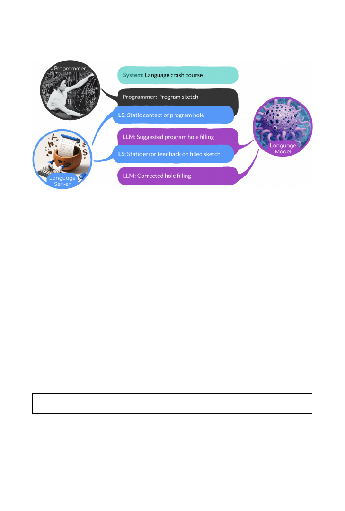
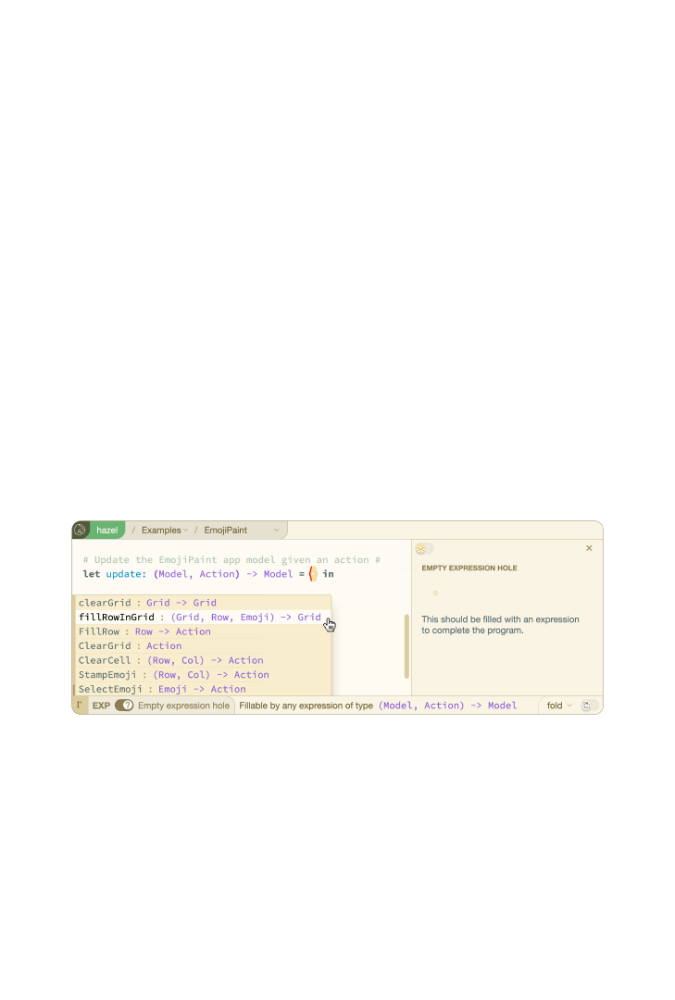
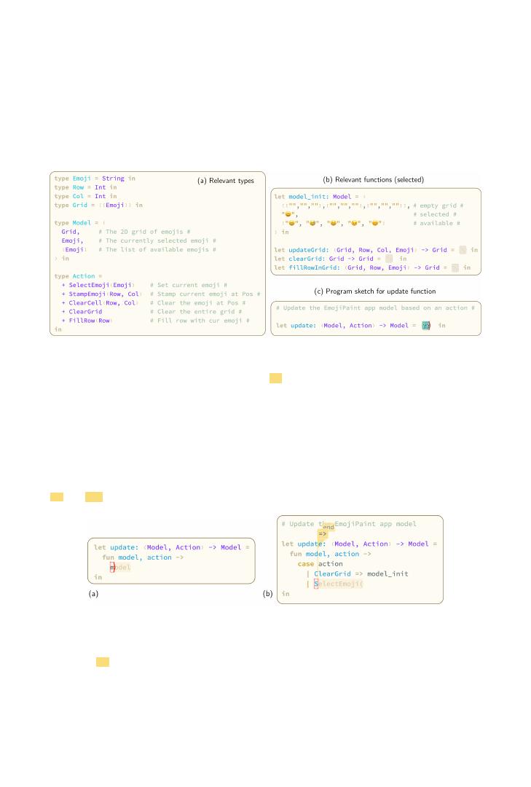
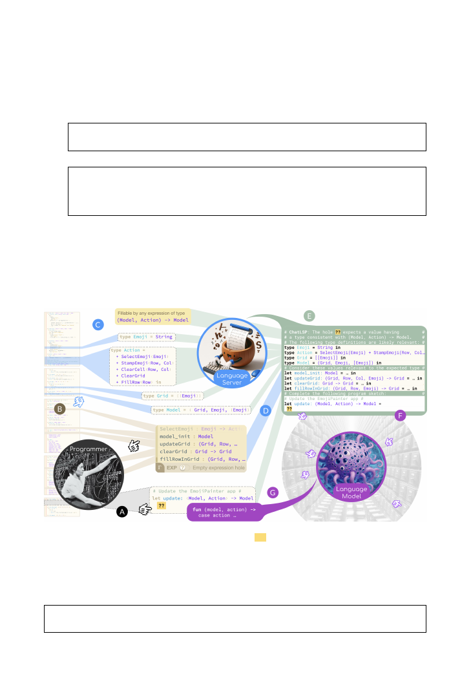
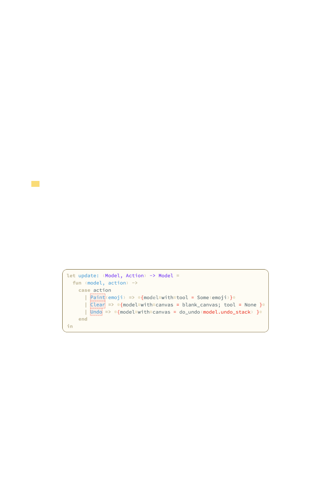
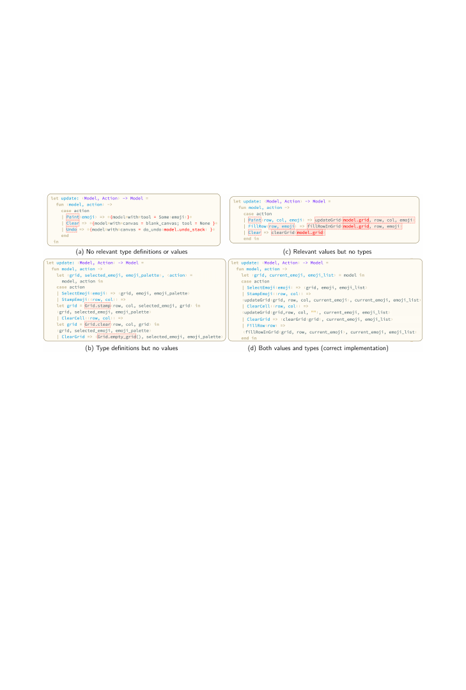
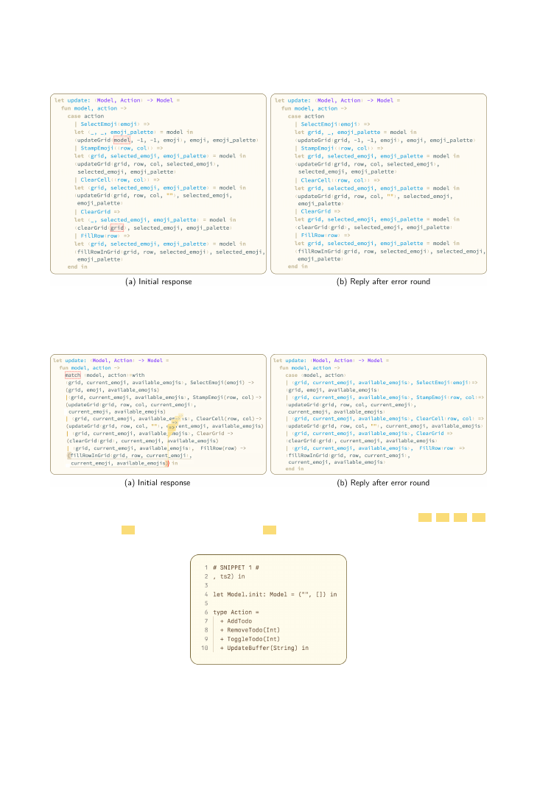
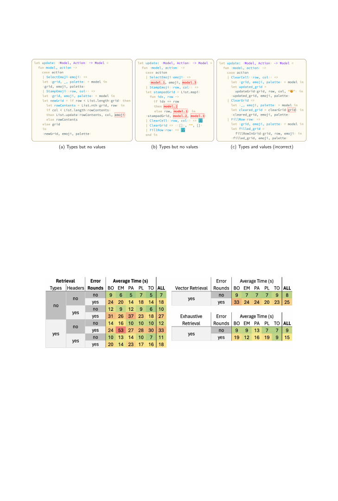
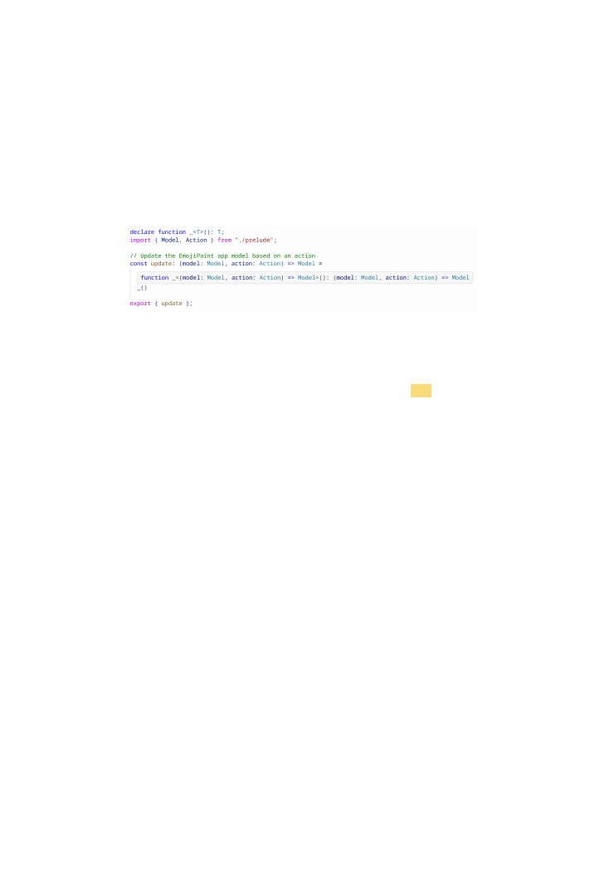
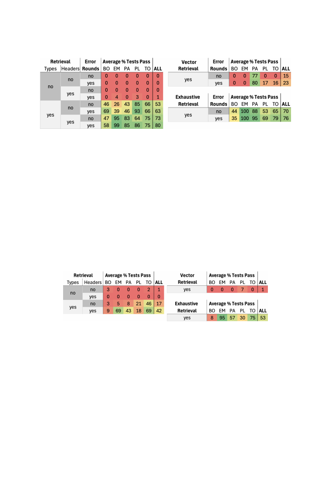

Statically Contextualizing Large Language Models with
Typed Holes
ANDREW BLINN
,
University of Michigan, USA
XIANG LI
,
University of Michigan, USA
JUNE HYUNG KIM
,
University of Michigan, USA
CYRUS OMAR
,
University of Michigan, USA
Large language models (LLMs) have reshaped the landscape of program synthesis. However, contemporary
LLM-based code completion systems often hallucinate broken code because they lack appropriate code context,
particularly when working with definitions that are neither in the training data nor near the cursor. This
paper demonstrates that tighter integration with the type and binding structure of the programming language
in use, as exposed by its language server, can help address this contextualization problem in a token-efficient
manner. In short, we contend that AIs need IDEs, too! In particular, we integrate LLM code generation into
the Hazel live program sketching environment. The Hazel Language Server is able to identify the type and
typing context of the hole that the programmer is filling, with Hazel’s total syntax and type error correction
ensuring that a meaningful program sketch is available whenever the developer requests a completion. This
allows the system to prompt the LLM with codebase-wide contextual information that is not lexically local
to the cursor, nor necessarily in the same file, but that is likely to be semantically local to the developer’s
goal. Completions synthesized by the LLM are then iteratively refined via further dialog with the language
server, which provides error localization and error messages. To evaluate these techniques, we introduce
MVUBench, a dataset of model-view-update (MVU) web applications with accompanying unit tests that have
been written from scratch to avoid data contamination, and that can easily be ported to new languages because
they do not have large external library dependencies. These applications serve as challenge problems due to
their extensive reliance on application-specific data structures. Through an ablation study, we examine the
impact of contextualization with type definitions, function headers, and errors messages, individually and in
combination. We find that contextualization with type definitions is particularly impactful. After introducing
our ideas in the context of Hazel, a low-resource language, we duplicate our techniques and port MVUBench
to TypeScript in order to validate the applicability of these methods to higher-resource mainstream languages.
Finally, we outline ChatLSP, a conservative extension to the Language Server Protocol (LSP) that language
servers can implement to expose capabilities that AI code completion systems of various designs can use to
incorporate static context when generating prompts for an LLM.
CCS Concepts: •
Software and its engineering
→
Software creation and management
; •
Theory of
computation
→
Type structures
.
Additional Key Words and Phrases: Large Language Models, Program Synthesis, Program Repair
ACM Reference Format:
Andrew Blinn, Xiang Li, June Hyung Kim, and Cyrus Omar. 2024. Statically Contextualizing Large Language
Models with Typed Holes.
Proc. ACM Program. Lang.
8, OOPSLA2, Article 288 (October 2024),
31
pages.
https://doi.org/10.1145/3689728
Authors’ Contact Information:
Andrew Blinn
, University of Michigan, Ann Arbor, USA, blinnand@umich.edu;
Xiang Li
,
University of Michigan, Ann Arbor, USA, xkevli@umich.edu;
June Hyung Kim
, University of Michigan, Ann Arbor, USA,
jpoly@umich.edu;
Cyrus Omar
, University of Michigan, Ann Arbor, USA, comar@umich.edu.
© 2024 Copyright held by the owner/author(s).
ACM 2475-1421/2024/10-ART288
https://doi.org/10.1145/3689728
Proc. ACM Program. Lang., Vol. 8, No. OOPSLA2, Article 288. Publication date: October 2024.
This work is licensed under a Creative Commons Attribution 4.0 International License.

288:2
Andrew Blinn, Xiang Li, June Hyung Kim, and Cyrus Omar
Fig. 1. Hazel Assistant Conversational Architecture (see
section 9
for image acknowledgements)
1
Introduction
Recent advances in generative AI have triggered an avalanche of new AI programming assistants—
the most prominent is Copilot [
23
], but it has many competitors—that generate code completions
by prompting a large language model (LLM) pre-trained on a corpus of diverse natural language
documents as well as code written in various programming languages [
7
,
17
,
17
,
49
,
73
,
78
]. Once
trained, an LLM iteratively transforms an input token sequence, called the
prompt
, into
next-token
probability distributions
from which
completions
are sampled. LLMs are able to learn statistical
regularities in the training data [
29
], with limited reasoning abilities emerging as LLMs scale up in
size [
89
]. As a result, AI assistants have become capable enough to substantially impact developer
productivity [
9
,
61
,
74
,
88
]. For example, one study reports a 50% increase in productivity when
using Copilot [
88
]. The impact is particularly pronounced for developers working with
high resource
libraries and languages, i.e. those well-represented in the training data [
78
].
Contemporary AI assistants construct the prompt primarily using the program text appearing in
a textual window around the developer’s cursor (the
cursor window
) [
66
]. This approach leads to
poor performance in situations where critical task-relevant context comes from definitions that
appear neither in the cursor window nor in the training data (the
semantic contextualization
problem
) [
2
,
19
,
38
,
60
,
67
,
77
,
82
,
83
]. For example, consider the following cursor window, which
would arise when a developer is implementing a GUI component using the model-view-update
(MVU) architecture (central to popular GUI application frameworks like React [
8
] and Elm [
18
]):
(* update the room booking data after a user action *)
f u n c t i o n
update ( model : Model , action : Action ): Model {
Correctly completing this function definition requires knowing the definitions of this specific
component’s
Model
and
Action
types, which commonly appear in different files in the repository
and therefore outside the cursor window. Various other files might also contain relevant definitions,
e.g. other types that can be reached from the definitions of
Model
and
Action
, and useful helper
functions for working with values of these types. Without access to these definitions, an LLM will
either be unable to generate sufficiently probable completions (which may result in no completion
Proc. ACM Program. Lang., Vol. 8, No. OOPSLA2, Article 288. Publication date: October 2024.
Statically Contextualizing Large Language Models with Typed Holes
288:3
being generated) or more typically it will hallucinate plausible-but-incorrect definitions based only
on the provided comment [
80
,
85
].
To address this problem, assistant designers use various retrieval augmented generation (RAG)
techniques [
25
] to retrieve additional code from other files in the repository and external libraries
for inclusion in the prompt. Real-world code bases often span hundreds of thousands of lines of
code, so exhaustive retrieval quickly runs into scaling issues. While prompt (i.e. context) size limits
continue to increase [
21
], generation costs (measured in both time and energy) scale with token
count [
30
]. These costs are substantial (because LLMs typically have billions of parameters) so
token efficiency
remains a critical metric [
66
]. Moreover, contemporary LLMs struggle to attend
to relevant information and ignore irrelevant information (such as the
Model
and
Action
types for
other
GUI components) in large prompts [
35
,
37
,
41
,
79
].
Given these issues, assistant designers need retrieval techniques that prioritize task-relevant code.
For example, Copilot retrieves code from locations in other files that the developer has recently
visited, based on the heuristic that these are likely to be task-relevant [
71
]. Another prominent
retrieval strategy, which we will refer to as
vector retrieval
, involves performing a vector search
across the repository (and perhaps beyond) to retrieve code similar to the code in the cursor
window [
44
,
82
,
83
], as measured by a learned vector similarity metric [
36
,
49
]. This relies on the
heuristic that lexically similar code is likely to be task-relevant code. In the example above, since
the type names
Model
and
Action
appear explicitly in the cursor window, this approach
may
find
their definitions. However, it may also find irrelevant definitions of other types named
Model
and
Action
and other implementations of
update
, e.g. those from other GUI components in this or other
applications. It may also be less effective when the task-relevant definitions are not named explicitly,
e.g. if the developer is later writing a call to
update
, the fact that the relevant types are
Model
and
Action
requires reasoning about the type signature of the
update
function.
These retrieval approaches are language-agnostic, treating source code as a sequence of tokens
like any other, so they must necessarily deploy imprecise heuristics. In this paper, we instead
consider language-aware approaches that take advantage of the fact that in many languages, code
is governed by a rich type and binding discipline determined by a static semantics [
28
,
62
]. To
retrieve relevant semantic information and analyze candidate code completions, we rely on a
modern language server [
10
,
13
] to provide various
language services
, namely type reporting, typing
context search, and error reporting. Integrated development environments (IDEs) interact with
these services to drive various human-facing affordances such as type hints and hover messages.
Here we investigate the hypothesis that LLM code completion can also benefit from interactions
with language services. Put pithily, we hypothesize that
AIs need IDEs, too
.
We investigate two language-aware approaches independently and in combination:
Static Retrieval.
The first approach we consider (
section 2
) is static retrieval, where the language
server is tasked to (1) determine the type and typing context of the “hole” (implicit in the
update
sketch above) at the cursor, and (2) transitively retrieve semantically relevant type definitions and
function headers, from wherever they might appear, for inclusion in the prompt.
In the
update
example, the hole that the language server inserts (either implicitly or explicitly) at
the cursor is of type
Model
(because it is in the body of the
update
function, which has return type
Model
), and the local typing context includes the argument
action : Action
, so the language server
can look up the definitions of the
Model
and
Action
types. These types might themselves refer to
other types, so we can transitively continue type retrieval. We can also retrieve information about
relevant helper functions in the typing context, e.g. those that operate on the types that have been
looked up, continuing transitively up to a token limit.
Proc. ACM Program. Lang., Vol. 8, No. OOPSLA2, Article 288. Publication date: October 2024.

288:4
Andrew Blinn, Xiang Li, June Hyung Kim, and Cyrus Omar
Static Error Correction.
To further improve correctness, we combine static retrieval in
subsec-
tion 2.7
with a straightforward syntactic and static error correction pass [
33
,
39
]: we ask the
language server to localize and generate error messages for syntactic and static errors in the
generated completion, then feed this information back into an instruction-tuned model, prompting
it to correct these errors, potentially over multiple rounds (trading off latency for correctness).
1.1
Evaluation Overview
1.1.1
Programming Languages and Language Servers.
The approaches that we investigate in this
paper are in principle applicable to any programming language with a well-structured type and
binding discipline. The more challenging requirement, which has limited the prior experiments in
these directions (which we review in
section 6
), is that we also need a rather capable language server.
In particular, the language server must be capable of robust syntax error and type error recovery,
producing a semantically meaningful program sketch (i.e. a program with
holes
) in any situation
where the developer might request code completion [
52
]. For instance, the example situation from
the beginning of
section 1
are syntactically erroneous, because the developer has not yet closed a
curly brace or parenthesis, so a standard compiler would simply report a syntax error and halt. In
other cases, there may be localized type errors elsewhere in the program that would ideally not
cause gaps in the availability of code completion.
For this reason, we evaluate these ideas primarily by developing an AI programming assistant
for Hazel, extending the Hazel Assistant with LLM support [
12
]. Hazel is a typed functional
programming environment designed specifically around typed holes, inserting them automatically
to ensure total syntax error recovery [
47
] and total type error recovery [
87
]. Hazel is also capable
of evaluating programs with holes [
50
,
81
] (including ‘non-empty’ holes inserted as membranes
around marked type errors [
87
]), which makes it possible to use unit testing to granularly evaluate
the correctness of even locally ill-typed model outputs (rather than the more ad hoc methods that
are common in the literature, like edit distance from a single canonical solution).
The Hazel language is similar to Elm, OCaml, and other languages in the ML family, i.e. it is a
pure typed functional language with support for algebraic datatypes and pattern matching. Unlike
Elm and OCaml, contemporary LLMs have not been trained on a substantial body of Hazel code, i.e.
Hazel is a
low resource language
. This presents both a challenge and an opportunity for research.
We have found that when asked to write Hazel code, contemporary LLMs fail to follow Hazel’s
syntax and semantics, often borrowing syntactic forms and library functions from OCaml and Elm.
However, LLMs are capable of in-context learning [
24
,
64
], suggesting that it is possible to include
few-shot examples and instructions in the prompt to quickly teach contemporary LLMs about how
Hazel differs from related higher resource languages. The error correction approach we investigate
may also be of particular interest in preventing errors in this sort of low-resource setting, which is
of considerable interest to the PL research community [
15
].
To demonstrate that static retrieval is useful even for mainstream high resource languages, we
also perform additional more limited experiments in
section 3
with TypeScript via the TypeScript
Language Server, an instance of the Language Sever Protocol (LSP) [
10
]. We find that the LSP does
not provide simple, direct access to the sort of information that is necessary to implement static
retrieval, so we propose a more direct interface as we introduce the various approaches throughout
the paper, summarized as a prospective LSP extenstion in
section 5
.
1.1.2
Tasks.
The most commonly reported LLM code completion benchmarks are HumanEval [
17
],
EvalPlus [
40
], MBPP [
7
], and LiveCodeBench [
32
]. These are unsuitable for evaluating the proposed
approaches because they consist of single-file tasks (constructed either manually, or derived from
Proc. ACM Program. Lang., Vol. 8, No. OOPSLA2, Article 288. Publication date: October 2024.

Statically Contextualizing Large Language Models with Typed Holes
288:5
public repositories or programming contests) that are low-context, i.e. they require only builtin or
standard datatypes, and therefore do not highlight the semantic contextualization problem.
Repository-level
benchmarks like RepoEval [
83
], RepoBench [
42
], CrossCodeEval [
20
], the Co-
CoMIC dataset [
19
], and defects4j [
34
] are more suitable because they are high-context, i.e. they
require completing code that depends on definitions in different files. However, these benchmarks
also present difficulties:
(1)
Data Contamination
: LLMs are known to be able to memorize code that they have seen
during training, and evidence suggests that this data contamination issue has indeed caused
public models to be overfitted to publicly available code [
32
,
65
]. All of these benchmarks
source examples from GitHub or PyPI. Based on reported cut-off dates, the projects in these
benchmarks will have by now likely been incorporated into the training of contemporary
models (noting that with few exceptions discussed below, training data is not disclosed).
(2)
Language Exclusivity
: None of these include Hazel code, nor is it easy to manually port
arbitrary projects taken from GitHub or PyPI that depend on various complex libraries to
Hazel or any other low resource language of interest to the community. Existing porting tech-
niques have only generated low-context datasets [
15
]. In addition, RepoEval and CoCoMIC
exclusively feature Python code, which is difficult to statically analyze.
(3)
Missing Tests
: None of the tasks in these benchmarks include unit tests, which means that
we can only evaluate correctness based on brittle textual similarity metrics. We observe that
models often produce correct output with substantial syntactic variation, similar to human
programmers [
27
].
For these reasons, we construct a repository-level benchmark suite, MVUBench, in
subsubsec-
tion 2.8.1
, that consists of various MVU web applications. Web application development is an
important and under-studied application domain. Many visions for the future imagine LLMs gener-
ating complete application logic, not just solving code competition problems [
75
]. MVU applications
are high-context in that they typically define a number of different datatypes which by convention
are often located in separate files. Some of these datatypes have generic names, like
Model
and
Action
, and a single application might have multiple such types, one for each GUI component,
presenting a significant challenge to language-agnostic techniques that do not understand binding
structure. Indeed, it is easy to construct particularly challenging yet realistic examples simply by
combining multiple components of MVUBench, as we demonstrate in
subsubsection 2.8.5
.
We address the data contamination problem following the approach taken by HumanEval, by
conceptualizing and implementing these applications from scratch, without directly adapting any
code from GitHub. We will control the release of these benchmarks to limit the likelihood of future
contamination [
31
]. We address the language exclusivity problem by ensuring that these MVU
applications do not have any external library dependencies, so it is easy to port them to languages
beyond Hazel and TypeScript, notably including pure functional languages. New MVU examples are
also easy to develop and add to the benchmark, because they can implement the logic of essentially
any front-end web application or GUI component. Finally, the lack of side effects also makes it easy
to unit test the core application logic.
1.1.3
LLMs.
We selected two pre-trained language models with which to perform experiments.
First, we selected OpenAI’s GPT-4(-0613) [
1
], which is currently consistently at or near the top of
code completion benchmarks, to evaluate whether even the most capable contemporary foundation
models (i.e. models so large that only large organizations like OpenAI have the resources to train
and deploy them) benefit from the approaches we consider.
GPT-4 is a closed model and many of its specific details, including its size and training, have
not been publicly disclosed. This presents a significant challenge to reproducibility. Consequently,
Proc. ACM Program. Lang., Vol. 8, No. OOPSLA2, Article 288. Publication date: October 2024.

288:6
Andrew Blinn, Xiang Li, June Hyung Kim, and Cyrus Omar
we also conduct experiments using StarCoder2-15B, the most capable fully open-source model
responsibly trained on a fully open code corpus, The Stack v2, as of this writing [
43
]. The Stack v2
has notably extensive coverage of low resource languages. StarCoder2-15B is small enough to run
locally on sufficiently powerful workstations, so our results should be reproducible indefinitely.
GPT-4 is an instruction-tuned model, so we are able to use it to evaluate static error correction.
StarCoder2-15B is completion-tuned, meaning it is not designed to receive and respond to instruc-
tions. We are not aware of a comparably powerful fully open source code-specialize model that is
instruction-tuned as of this writing, so we do not evaluate error correction with StarCoder2-15B.
2
Static Retrieval and Error Correction in the Hazel Assistant
We first introduce Hazel and the Hazel Assistant by example from the developer’s perspective.
We continue by describing how the Hazel Assistant prompts GPT-4 and interfaces with the Hazel
Language Server to generate code completions augmented with static retrieval and error correction.
Then, we introduce the MVUBench benchmark suite and report the results of an ablation study of
each of these features. We investigate their relative contributions to the overall performance of the
assistant on these high-context MVU tasks, relative to various baselines that establish bounds on
performance.
2.1
Hazel
Hazel is a web-based live functional programming environment that features total syntax and type
error recovery via automatic hole insertion [
47
,
87
]. This ensures that every editor state in Hazel is
a semantically meaningful program sketch and that Hazel’s various editor services, include code
completion, never experience gaps in service [
52
].
Fig. 2. The Hazel IDE
As a running example, consider a scenario where the developer is implementing EmojiPaint, a
simplified MVU app where a user chooses an emoji from a palette and paints designs by ‘stamping’
it on a grid.
Figure 2
shows the user editing the file where the
update
function is defined. In
Figure 2
the developer’s cursor is shown as a red convex triangle to the right of a hole, represented
as a convex hexagon. The Hazel IDE interfaces with the Hazel Language Server to report static
information which both user and model can use to inform completions. The bottom bar, called the
Cursor Inspector, reports information on the syntax as well the expected type of the expression,
here a typed hole of the function type
(Model, Action) -> Model
, at the cursor. The lower left
popup, called the Context Inspector, reports the typing context at the cursor.
Proc. ACM Program. Lang., Vol. 8, No. OOPSLA2, Article 288. Publication date: October 2024.

Statically Contextualizing Large Language Models with Typed Holes
288:7
The
update
function is intended to respond to EmojiPaint user actions in the GUI, represented by
values of type
Action
, transforming the current GUI state, represented by values of type
Model
, to a
new GUI state, also of type
Model
. These types and associated helper functions appear in different
files, excerpted in
Figure 3
(a-b). Algebraic datatypes (i.e. recursive sum types) are represented in
Hazel as constructors separated by
+
(rather than
|
in similar languages like OCaml).
Fig. 3. (a) The types relevant to the EmojiPainter MVU app. (b) An excerpt of already-implemented functions
in another file (with definitions collapsed by Hazel’s outliner). (c) The stubbed function header, where the
developer has requested LLM completion by inserting
??
in the hole.
2.2
Hazel Assistant
The Hazel Assistant is a programming assistant that generates code completions by two mechanisms.
To provide fast, local completions, the Hazel Assistant generates type-directed completions [
12
],
using localized syntactic and static information to inform small completions with type-directed
lookahead as shown in
Figure 4
(a-b). This feature can be invoked even when there are syntax errors
because Hazel tracks syntactic obligations in a backpack, e.g. as shown in
Figure 4
(b) where both
=>
and
end
are necessary to complete the case expression [
47
].
Fig. 4. The Hazel Assistant defaults to providing only type-directed token completion.
To request an LLM completion from the Hazel Assistant, the developer can fill any expression
hole with
??
which starts to animate as suggested in
Figure 3
(c). GPT-4, our underlying model
in this section, is not particularly fast as of this writing, so the developer can continue to edit
elsewhere while waiting for GPT-4 to return a completion. For this example,
Figure 5
shows an
example of a GPT-4-generated completion. The developer can inspect this completion (which would
display any type errors found) and accept it with the
Tab
key.
Proc. ACM Program. Lang., Vol. 8, No. OOPSLA2, Article 288. Publication date: October 2024.
288:8
Andrew Blinn, Xiang Li, June Hyung Kim, and Cyrus Omar
Fig. 5. The Hazel LLM Assistant, combining static information with generative creation via language models,
is capable of offering more substantial completions
2.3
The Hazel Assistant Trialogue
Our generative hole filling process consists of the following steps, construed here as a ‘trialogue’
between programmer, the Hazel Language Server, and a language model. This is depicted in
Figure 1
as a series of chat messages. In our setup, the primary interaction is between the language model
and the Hazel Language Server, which acts on behalf of the user in response to a request for LLM
hole filling, kicking off the following exchange. Here we use the messaging terminology from the
OpenAI Chat API [
54
], which distinguishes System, User, and Model messages:
(1)
System Message
: Hazel Crash Course and few-shot examples
(2)
User Message
: Program sketch augmented by static retrieval
(i.e. relevant semantic context from the language server)
(3)
Model Message
: Suggested hole filling
(4)
User Message
: Syntax and type errors in the completion, if any
(5)
Model Message
: A corrected completion, if necessary
We repeat steps 4-5, i.e. we perform syntactic and static error correction when needed, stopping
after at most two iterations to limit latency.
2.4
System Message: The Hazel Crash Course
The system message is generic, common to each prompt. For an instruction-tuned model (GPT-4),
the system message consists of three sections:
First, we provide a list of instructions delineating the task. In particular, we instruct the model to
provide a code fragment to replace a sentinel value representing the target hole in the program
sketch. For example, the model is given the instructions:
•
"Reply only with code"
•
"DO NOT include the program sketch in your reply"
Second, an informal specification of Hazel syntax with emphasis on ‘negative characterization’,
listing differences from syntactically-similar higher-resource languages. As this kind of ‘prompt
engineering’ is as-yet a task-sensitive and inexact process, this section, along with the one above,
was constructed though an ad-hoc process of discovering repeated syntactic errors in model output.
For example:
•
"No 'rec' keyword is necessary for 'let' to define a recursive function"
•
"There is no dot accessor notation for tuples; use pattern matching"
Proc. ACM Program. Lang., Vol. 8, No. OOPSLA2, Article 288. Publication date: October 2024.

Statically Contextualizing Large Language Models with Typed Holes
288:9
Finally, we positively characterise hazel syntax via a fixed list of input/output pairs of sketches
and program completions (few-shot prompting). We show one example below:
•
Sketch
let
List. length : [( String , Bool )] -> Int =
fun
xs -> ??
end in
•
Completion
case
xs
| [] => 0
| _:: xs => 1 + List. length (xs)
end
For the smaller completion model (StarCoder2-15B) discussed below, which has a longer context
window (16k versus 8k for GPT-4-0613) but is not instruction-tuned, we omit the first two sections,
in lieu of providing a longer list of syntax examples, which are provided simply as a list of definitions
rather than input-output pairs.
2.5
Type Retrieval
Fig. 6. A programmer requests a hole filling (A) by typing
??
, either intentionally or in a fit of frustration.
The Hazel Language Server provides codebase-wide (B) semantic information relevant to the hole, collecting
types based on the expected type (C) and selecting type-relevant headers from the context (D). These are
combined into a contextualized text prompt (E) which is sent (F) to the LLM resulting in hole filling (G).
The base EmojiPaint update function program sketch is as follows:
(* Update the EmojiPaint app model based on an action *)
let
update : (Model , Action ) -> Model = ??
in
Proc. ACM Program. Lang., Vol. 8, No. OOPSLA2, Article 288. Publication date: October 2024.

288:10
Andrew Blinn, Xiang Li, June Hyung Kim, and Cyrus Omar
We augment this sketch with additional static information obtained via the Hazel Language
Server, serialized into text, displayed as a kind of projected view of the codebase – a static program
slice contextualized to the relevant program hole. Specifically, we retrieve the following static
information (diagrammed in
Figure 6
):
•
Type Retrieval
: The expected type at the cursor, along with the definitions of any types aliases
occurring in that type, and the definitions of aliases occurring in that definition, and so on
recursively until we arrive at base types.
•
Header Retrieval
: A selection of values, annotated with their types, filtered from the typing
context based on a type-directed metric of relatedness to the expected type described below.
While we use Hazel to illustrate our approach, our goal is to outline an approximate API which
could be implemented by any language server for a typed language which could drive a similar
system in another language. We’ll define the approximate methods for such an API as we go, and
later collect them in
section 5
.
2.5.1
Relevant Type Definitions.
Given the above program sketch, the expected type of the hole
??
is
(Model, Action) -> Model
. While in this example, adding the expected type to the prompt
is strictly redundant, as it already appears as the function’s type annotation, in general Hazel’s
bidirectional type system [
51
,
87
] allows a similar expected type to be extracted in any position for
which there exists type constraints, such as in function argument position, or in a module signature
including
update
.
Absent this sort of context, this type is elucidatory on its own. Based on the provided comment,
a language model might and likely will ‘guess’ that these refer to the state and state changes of an
Model-View-Update application. But as we shall see, it is unlikely to guess the precise structures of
the types the programmer has actually used. An example demonstrating the common case is show
in
Figure 7
:
Fig. 7. A typical completion with no static retrieval. Here, the language model hallucinates plausible but
incorrect constructors for the Action type, and hallucinates Model as a record type using syntax not supported
in Hazel.
Hence we do automatically what a programmer in an unfamiliar codebase might do manually:
recursively pursue type definitions to unwind the local semantic context hinted at by the type
expectation. Providing this list to a language model is analogous to a human using the IDE to hover
over types and jump iteratively to their definitions. First, we extract relevant type aliases:
•
Model
•
Action
Then, we retrieve their definitions:
•
type
Model
=
(Grid, Emoji, [Emoji])
•
type
Action
=
SelectEmoji(Emoji) + StampEmoji(Row, Col) + ...
Proc. ACM Program. Lang., Vol. 8, No. OOPSLA2, Article 288. Publication date: October 2024.
Statically Contextualizing Large Language Models with Typed Holes
288:11
And finally, we transitively complete this process, retrieving any additional aliases which occur
in those definitions: the aliases
Grid
and
Emoji
from the
Model
definition and the aliases
Row
, and
Col
from the
Action
definition:
•
type
Emoji
=
String
•
type
Row
=
Int
•
type
Col
=
Int
•
type
Grid
=
[[Emoji]]
Note that even though these type definitions are, from the point of view of the Language Server,
abstract entries in the typing context, we are specifically electing to reproduce them in format
resembling their original lexical concrete syntax. We have noticed that attempting this kind of
naturalistic reproduction increases that chance that language model generations stay on-task,
generating code in the relevant concrete syntax without reverting to prose or ill-formed syntax.
To support the above method, a language server could implement the following methods, which
may be implementable as thin glosses on top of existing methods such as ’Go to type definition’:
•
getExpectedType:
(Program, LexicalLocation) -> Type
•
extractAliases:
Type -> [Type]
•
getTypeDefinition:
TypeAlias -> Type
To briefly contrast this process to embedding-vector-based retrieval augmented generation:
•
While vector retrieval might flag these definitions as
possibly
relevant, note that they are
necessarily
relevant. Our knowledge of the language semantics means we know that any
completion
must
respect these types, an assurance which allows us to offload burden from
the more expensive and imprecise associative lookup.
•
This necessary relevance also increases the chance that subsequent recursive retrievals will
be relevant, addressing the issue of reliable
multi-hop lookups
noted by industry implementers
[
6
]
•
Static retrieval necessarily respects scope. Vector retrieval may return related-seeming defi-
nitions, but without exact knowledge of the language semantics, there is no guarantee that
these will be
the
definitions relevant to this lexical context.
2.6
Relevant Headers from the Typing Context
In addition to relevant type definitions, we augment the prompt with the names and types (which
together we term the
headers
) of relevant values – typically functions – from the typing context.
From a user interface perspective, this is analogous to a type-directed autocomplete menu.
Our extraction method divides into three stages:
(1) Use the expected type to identify a list of target types
(2) Filter the typing context for values with types related in a certain way to these target types
(3) Assign scores to each element of the resulting list, and return the prefix of that list truncated
at some scoring and length thresholds (here, score > 0.0 and 10 items respectively)
The resulting context entries are formatted as code sketches, again to facilitate language model
ingestion. For example the pair (
string_of_int
,
Int -> String
) is formatted as:
let
string_of_int : Int -> String =
in
Here, the body of the definition is simply omitted. Interestingly, we originally used ellipsis (
...
)
in place of the body, but this resulted in an increased chance the model (especially the smaller
StarCoder2 model) would itself emit the token
...
in lieu of a full completion.
Proc. ACM Program. Lang., Vol. 8, No. OOPSLA2, Article 288. Publication date: October 2024.

288:12
Andrew Blinn, Xiang Li, June Hyung Kim, and Cyrus Omar
2.6.1
Identification of Target Types.
First, we deconstructing the expected type to identify relevant
sub-components which could be used, in conjunction with their relevant elimination forms, to
construct the target. Our initial target type is simply the type of the hole itself:
Target types
=
(Model, Action) -> Model
Then, if that type is a compound type, we consider its components. In particular, if the type is a
product type, we consider its components to be targets, and if the type is an arrow type (as it is
here), we consider its return type to be a target.
Target types
=
(Model, Action) -> Model, Model, ...
In principle, we could continue this deconstruction recursively indefinitely, but for our immediate
purpose of identifying likely-relevant types, we’ve found it suffices to extend one more iteration;
that is, product/arrow types containing product/arrow types. It simplifies our calculations to
internally normalize all type definitions (Hazel is structurally typed). Here, we will only do so
opportunistically for clarity of presentation:
Type of hole
=
((String, (Grid, Emoji, [Emoji])), Action) -> (Grid, Emoji, [Emoji])
Target types
=
(Model, Action) -> Model, Model, Grid, Emoji, [Emoji]
One can likely see other ways of extending target type extraction. Possibilities included destruc-
turing more compound types such as records, or for function types, also considering the input
types as a kind of negative target, in that we may want to prioritize types that consume a relevant
type from the local context. For now we proceed with the simple approach outlined.
We do not, however, return unaliased base types such as
Bool
or
String
as target types. Early
experimentation indicated that, given that there are typically many standard library functions on
base types, often with no a priori way to distinguish their relevance based on types, such functions
would often act as confounders, since which happened to be included was incidental. In practice, a
standard library would already be well-understood by an LLM from the pre-training or fine-tuning
step. For Hazel, we replicate much of the OCaml standard library to sidestep this need.
2.6.2
Filtering the Context.
For each target type, we filter the typing context to retrieve types
which can be used, again in conjunction with appropriate elimination forms, to produce the target.
This is essentially similar to target type extraction. In particular, we return types which are
consistent with the target, arrow types whose return type is consistent with the target, and product
types whose have a component consistent with the target. For example:
Target type
Grid
yields
•
updateGrid:
(Grid, Row, Col, Emoji) -> Grid
•
clearGrid:
Grid -> Grid
•
fillRowInGrid:
(Grid, Row, Emoji) -> Grid
2.6.3
Sorting and scoring the filtered context.
Prior work [
12
] has surveyed various ways in which
semantic information can be used to sort typing-context-originating suggestions for relevance. For
our purposes here we use a simple scheme intended as a proof-of-concept to establish a baseline
for more sophisticated methods.
By default, Hazel context entries are sorted by locality of definition, which provides a reasonable
default for relevance. Thus we sort stably with respect to the locality ordering for context entries
having the same score.
Proc. ACM Program. Lang., Vol. 8, No. OOPSLA2, Article 288. Publication date: October 2024.
Statically Contextualizing Large Language Models with Typed Holes
288:13
By default, all entries are assigned a score of 1.0. However, if a type contains the (gradual)
unknown type (
?
), a multiplier is applied based on the ratio of unknown to known type constructors
in the type (for example, the type
[?]
– a list of unknown type – would receive a multiplier of 0.5,
since the list constructor is known). This acts simply to de-prioritize incomplete implementations,
about which not enough information is available to make it a good suggestion.
Here are the relevant headers from the EmojiPainter example:
" Consider using these variables relevant to the expected type :"
let
model_init : Model =
in
let
fillRowInGrid : (( Grid , Row , Emoji ) -> Grid ) =
in
let
clearGrid : (Grid -> Grid) =
in
let
updateGrid : (( Grid , Row , Col , Emoji ) -> Grid) =
in
In order to implement relevant header extraction in an arbitrarily language server, one could
provide the following methods:
•
getTargetTypes:
Type -> [Type]
•
filterContext:
Context, Type -> [(Name, Type)]
•
scoreEntry:
(Name, Type) -> Float
2.7
Syntactic and Semantic Error Correction
The use of instruction-tuned language models makes available a lightweight form of program
repair based on an iterative loop of generating completions and retrieving error messages from
compilers or static analyzers. The general technique of looping LLM code generation on compiler
errors appears to have emerged in tandem with early LLM code generation experiments [
59
] [
84
]
and has been examined in greater detail by Joshi et al. [
33
].
After receiving a response from the model, we substitute the received completion into the
original program sketch. We then query the Hazel Language Server to parse the resulting program.
Hazel parsing is strongly incremental, enabling the (partial) type-checking of programs even in the
presence of unrecognized or missing delimiters. We then query the language server for a list of
static errors, which include syntax and type errors. If there are any such errors, we serialize them
to a string, and send them to the language model.
In order to maintain model context, we append the errors to a growing log of messages beginning
with the original prompt. The number of correction rounds which can be performed in this way
is thus limited by the length of the context window; in our case, using the 8k token window of
GPT4-0613, we are effectively capped at 5 rounds. However, we have noticed that 2 rounds are
often sufficient to eliminate static errors, and that rounds in excess of 2 tend to show diminishing
returns, so we have capped the maximum number of rounds at 2.
To support this in another language, its language server must be able to localize static errors,
reporting locations and error messages. Ideally, it would produce a list of errors, rather than just
the first error encountered, as is supported by Hazel’s total type error localization and recovery
system [
87
]. This could be achieved by implementing the following method:
•
getStaticErrors:
Program -> [StaticError]
2.8
Experimental Evaluation
We now evaluate the effectiveness of this method of proactive static contextualization and retro-
spective correction for LLM code completion.
Proc. ACM Program. Lang., Vol. 8, No. OOPSLA2, Article 288. Publication date: October 2024.

288:14
Andrew Blinn, Xiang Li, June Hyung Kim, and Cyrus Omar
2.8.1
MVUBench.
Hazel is a low-resource language, so we are unable to conduct an at-scale
evaluation in this context. Instead, as previously motivated, we construct a benchmark suite of five
MVU applications including the EmojiPainter example from the previous sections:
•
Todo (
TO
)
: Maintains a list of tasks
•
Room Booking (
BO
)
: Manages a room booking schedule
•
Emoji Painter (
EM
)
: Paints emoji stamps on a small canvas
•
Playlist Manager (
PL
)
: Manages a music playlist
•
Password Strength Checker (
PA
)
: Rates a password via a dynamic set of properties
The baseline program sketch provided to the language model for each of these programs is
simply the type-annotated function header for its corresponding
update
function, along with a
single-line comment describing that function’s purpose, including the name of the application, in
line with the running example.
Each application also comes with a simulated repository containing relevant (and less relevant)
type and utility function definitions.
We also provide a small test suite for each example, consisting of 10-15 tests ensuring that each
MVU action behaves as a user might reasonably expect without additional specification.
In such a situation, a naive language model completion would be informed only by the
update
function type aliases (which are often generic terms such as
Model
) and the single-line comment
(which only hints at the intended functionality). While it is still possible that in very typical
situations, the model might correctly guess appropriate types and names, more likely (as we shall
see) it will hallucinate plausible-but-incorrect completions. By varying the methods through which
additional context is provided, and the corrective methods applied to resulting completions, we
provide a baseline analysis for the relative effects and interactions of these methods on LLM code
completion.
2.8.2
Feature Ablation Experiment.
Our main experiment consisted of 320 completions trials, each
of which makes between one and three calls to the language model. These 320 trials divide as
follows:
•
8 feature ablation configurations
–
Type Retrieval
: Whether to include expected type and type definitions
–
Header Retrieval
: Whether to include relevant headers from the typing context
–
Error Rounds
: Whether to perform up to 2 static error correction
•
5 program sketches (TO, BO, EM, PL, PA)
•
20 completion trials per combination
(to account for model non-determinism [
56
]). We
ran these experiments at temperature 0.6 (a hyperparameter effecting the stochasticity of
token sampling), selected based on trial experiments as a balance between noisy variance
and producing a range of interestingly distinct completions
2.8.3
Comparison Baseline 1: No Context.
The ablation configurations lacking all static retrieval
feature serves as a lower bound baseline – without any context except the brief comment on
the
update
function, we would expect even high-performing models to perform poorly due to
lack of context. This is the current reality for AI programming assistants that do not attempt
repository-level retrieval.
2.8.4
Comparison Baseline 2: Exhaustive Retrieval.
An additional baseline configuration, beyond
those outlined above, is to perform exhaustive retrieval of all application code, excluding tests, up
to the context window limit. This serves as a token-inefficient upper bound on performance.
Proc. ACM Program. Lang., Vol. 8, No. OOPSLA2, Article 288. Publication date: October 2024.
Statically Contextualizing Large Language Models with Typed Holes
288:15
2.8.5
Comparison Baseline 3: Vector Retrieval with Confounds.
Finally, we compare our approach
to vector retrieval. Given that our test corpus consists of 5 relatively small programs, we have
emulated a larger more realistic codebase by combining those five programs, minus tests and
update functions, along with Hazel’s standard library, to create a 1000-line simulated codebase from
which context can be drawn. Combining these programs has the effect of creating some possible
lexical confounders, e.g. two types having the same name; we contend that this construction, albeit
synthetic, nonetheless emulates a legitimate source of confusion for a scope-unaware method like
vector retrieval.
We have used the simplest standard RAG strategy, uniformly dividing the codebase into 150-
character chunks, which were submitted to OpenAI’s Ada (text-embedding-ada-002), a commercial
embeddings model [
49
]. The retrieved 1536-element vectors, along with their associated text chunks,
are then stored locally in a JSON file acting as a basic vector database.
In order to retrieve chunks relevant to a provided sketch (our function headers and comments),
we submit that sketch to the same API endpoint, and then search our vector database for the top 6
chunks with the highest cosine similarity [
49
].
The above parameters (150 character chunks, 6 entries) are chosen so that the total (900 characters)
lines up with the average length of the total static retrieval context (types + relevant context) for
our 5 examples, with the chunk size being set as small as possible while still being able to fully
contain most type definitions in our corpus.
It should be noted that there exist a variety of more advanced chunking strategies which may
yield better results, including overlapping windows, chunks aligned to inferred authorial intent [
76
],
and semantic chunking which takes into account source syntax. However, all these strategies have
complex trade-offs which take us beyond our immediate comparative goals; for example, chunking
by top-level definitions (a language-aware approach) might prevent issues with a poorly-truncated
definition being included in a prompt, but seeing as definitions can range widely in size, being
forced to include an entire definition may prevent multiple chunks which are together more relevant
from being included.
As such, we have elected to leave the RAG baseline structurally agnostic, so as to more cleanly
contrast it with semantic methods, while noting it is likely that ultimately these two methods are
not exclusive and can be used synergistically in a production setting (for example, balancing the
ratio of typed semantic versus associative RAG depending on the amount of static information
available at a given lexical location). We return to this theme in
section 6
.
2.9
Hazel GPT-4 Results
Fig. 8. Hazel GPT-4: Results for guided completion (20 trials per, temperature 0.6)
Proc. ACM Program. Lang., Vol. 8, No. OOPSLA2, Article 288. Publication date: October 2024.

288:16
Andrew Blinn, Xiang Li, June Hyung Kim, and Cyrus Omar
Figure 8
shows the results of our evaluation for GPT-4. We see a clear trend of more semantic
information yielding better results on the held-out tests. The no-context baseline (no/no/no) alone
does not suffice to yield meaningful generations, often returning syntactically incorrect code as
the model hallucinates data types and syntax (such as OCaml-style records) which do not exist in
Hazel, despite the inclusion of the Hazel Crash Course.
Including type definitions seem absolutely necessary to allow the model to scaffold the update
function. Without this scaffolding, relevant function headers alone show little effect on correctness.
However, in combination with types, function headers have a large multiplicative effect, increasing
test performance threefold.
Figure 9
provides concrete examples of this interaction:
Fig. 9. Some sample completions for various configurations. In (a), without any supporting context, we see
reasonable-but-incorrect guesses at both the
Action
constructors and the
Model
type; furthermore, the
model completion uses record syntax which does not exist in Hazel. (b) uses the provided types correctly
but hallucinates helper names. In (c) we see uses of appropriate helpers, but (mostly) incorrect guesses for
Action
constructors. (d) exploits the provided context to produce a fully correct solution.
Similarly, error rounds on their own are ineffective on code consisting largely of hallucinated types
and functions. But given the scaffolding effect of relevant static information, they act multiplicatively,
increasing performance by a factor of 4 for types without headers, and a factor of 1.5 for both types
and headers. Error rounds were particularly effective at transforming almost-correct completions
to fully correct ones, as shown in
Figure 10
.
One phenomenon of note was that sometimes even poor error messages proved effective; the
error in
Figure 11
is an at-most partially accurate characterization of the syntax error, but knowing
there was a syntax error proved sufficient for the model to correct it, perhaps due to the additional
context provided in the Hazel Crash Course.
The combination of types and headers performed well against the Vector Retrieval baseline,
though it should be noted that this was disproportionately due to a single confounding chunk
which was retrieved for each example, even though it is only relevant to the Todo application (see
Figure 12
). We believe that, due to the fact that this chunk coincidentally includes the word symbol
Model
twice alongside
Action
, it is deemed relevant to each
update
sketch. The inclusion of this
snippet often resulted in the language model attempting to implement a Todo application, or some
hybrid thereof. We debated refining the chunking strategy to remove this confounder, but found it
easy to inadvertently create similar scenarios; ultimately, it is a representative artefact of a process
which is fundamentally non-scope-aware. See
section 4
for further discussion.
Proc. ACM Program. Lang., Vol. 8, No. OOPSLA2, Article 288. Publication date: October 2024.

Statically Contextualizing Large Language Models with Typed Holes
288:17
Fig. 10. Error rounds were generally very effective at correcting an almost-correct program. Here, the error
round reply included a type inconsistency error on
model
and an unbound variable error in
grid
, both of
which were corrected in the model’s reply
Fig. 11. Here, a parse error (match/with used instead of
case
) was corrected, even though the Hazel error
message in this case is somewhat unclear:
“The parser has detected unmatched delimiters:
=>
,
=>
,
=>
,
=>
.
The presence of a
=>
in the list likely indicates that a
->
was mistakenly used in a case expression.”
Fig. 12. A confounding snippet commonly retrieved by vector retrieval
See
Figure 13
for additional examples of more atypical completions.
Proc. ACM Program. Lang., Vol. 8, No. OOPSLA2, Article 288. Publication date: October 2024.

288:18
Andrew Blinn, Xiang Li, June Hyung Kim, and Cyrus Omar
Fig. 13. Some more exotic completions: (a) is an excerpt of a very long solution which, not having access to
headers, almost successfully managed to re-implement the required logic in-line. In (b) we see an example of
a completion containing explicit holes, likely due to their presence in our few-shot example sketches. In (c),
the LLM somewhat quixotically suggests substituting a different emoji in lieu of the empty string.
It is worth nothing that although the results for types + headers are similar to those for exhaustive
retrieval, with exhaustive retrieval performing somewhat better, our experiments are not powerful
enough to significantly distinguish between these cases, as the sizes of our programs are small
enough that the context size delta is not reflective of real-world use cases. Specifically, the size of
the retrieval context averaged 890 characters for our programs, whereas the exhaustive context
averaged 1370 characters. As it stands the performance delta seems to compare positively to the
context length (and hence cost) delta, but more data is needed to make this conclusive.
Fig. 14. Hazel GPT-4: Time elapsed for guided completion (20 trials per, temperature 0.6)
2.9.1
Token and Time Performance.
Figure 14
shows the time taken in seconds for all trials. The
time taken is dominated by the number of round trips through the API, with each round scaling in
proportion to the sum of the length of the context and the length of the generation. Generally these
times are too long for use in a practical completion setting; our intention is to determine a ceiling
on current performance with respect to correctness rather than present a practical system. Note
however that these times will likely decrease quickly with hardware and software advances. As of
May 2024 GPT-4o[
53
] performs on average twice as fast as the GPT-4-0613 model checkpoint used
for our experiments. However, the long worst-case times for error rounds suggests that capping at
a single correction round may be more practical, or motivate the use of summarization to reduce
token count during error rounds.
Proc. ACM Program. Lang., Vol. 8, No. OOPSLA2, Article 288. Publication date: October 2024.
Statically Contextualizing Large Language Models with Typed Holes
288:19
Fig. 15. Hazel GPT-4: Tokens used for guided completion (20 trials per, temperature 0.6)
Figure
Figure 15
shows the total tokens used, both sent and received from the API. These are
roughly proportional to the time taken, and precisely proportional to the total cost.
2.10
Hazel StarCoder2-15B Results
Fig. 16. Hazel StarCoder2: Results for guided completion (20 trials per, temperature 0.6)
To assess the effectiveness of static retrieval with smaller completion models, we conducted tests
using StarCoder2-15B, a model small enough to be run locally on consumer hardware. The average
percentage of tests passed, shown in the rightmost column of
Figure 16
, exhibits a consistent trend
with the GPT-4 results. In the absence of any type or header information, StarCoder2 performed
poorly. The addition of type information drastically improves performance, increasing the percent-
age of correct solutions by an order of magnitude. Furthermore, incorporating headers leads to an
additional 50% increase in relative performance.
However, two examples,
BO
and
TO
, experienced degraded performance after the inclusion of
headers. After close examination of the headers and the output programs, we discovered that the
completions tending to use type-appropriate but in-fact irrelevant retrieved headers. We hypothesize
that smaller completion models, such as StarCoder2, are more sensitive to code that appears near the
end of the context window, making them more susceptible to the influence of irrelevant information.
We touch on this failure mode again when we consider related work in
section 6
.
Vector retrieval baseline performance was significantly worse (in absolute and relative terms)
than with the larger model. We conjecture that this is due to a heightened sensitivity to erroneous
syntax in the prompt created by chunk truncation.
3
Static Retrieval in TypeScript
To confirm that the above results are not an artefact of using a low-resource language, we also
experimented with static retrieval in TypeScript.
Proc. ACM Program. Lang., Vol. 8, No. OOPSLA2, Article 288. Publication date: October 2024.

288:20
Andrew Blinn, Xiang Li, June Hyung Kim, and Cyrus Omar
3.1
TypeScript Methodology
Our methodology roughly follows the Hazel experiments. As TypeScript is a high resource language,
well-represented in training sets, we did not need to provide a syntax crash course as we did for
Hazel. TypeScript lacks the explicit support for typed holes and thus a convenient way to extract
semantic information. We emulated typed holes using a previously established approach [
14
] using
generic functions (
Figure 17
).
Fig. 17. Hovering over a simulated program hole in TypeScript
Specifically, we prefix the sketch file with the declaration:
declare
function
_<T>(): T
. Then,
we represent a program hole as an application of that generic function:
_()
. Calling the TypeScript
language server’s hover method on the hole gives us a corresponding type signature. It should be
noted that this method of emulating typed holes is not fully general. While it works consistently
for holes replacing the bodies of function definitions, it fails in some syntactic positions, including
as an operand of infix operators.
Static retrieval of type definitions is performed via the TypeScript language server. In particular
we use coordinated calls to the
Go to Type Definition
and
Hover
methods to recursively retrieve
relevant types from the source lexically.
There does not appear to be any direct way of retrieving a typing context given a lexical
location, or even a complete list of variables in scope using the TypeScript language server. We
experimented with different methods to retrieve relevant headers, including scanning the repository
using CodeQL, but were did not find a fully satisfactory general approach. Rather than incurring
the engineering cost of a compiler-level intervention, we simulated the retrieval of relevant headers
manually, emulating the same methodology as the Hazel Language Server. As such, our TypeScript
implementation should be considered a rough proof-of-concept; our experience here motivated our
prospective LSP extension outlined in
section 5
.
We used the TypeScript compiler to collate static errors for correction rounds.
Adapting MVUBench to TypeScript was done with the aid of Claude [
4
], an LLM chat agent (See
section 9
for more about our supporting LLM usage). Transliterated code was manually adjusted to
establish basic conformance to TypeScript idioms, for example adding elements to array at the end,
versus at the start is standard for linked lists in functional languages like Hazel. Our experience
here suggests that MVUBench can be ported with relative ease to other similar languages.
3.2
TypeScript GPT-4 Results
In broad strokes the TypeScript results (
Figure 18
) are similar to the Hazel results. We see, somewhat
unsurprisingly, that a higher-resource language, well represented in the training set, achieves better
overall completions from the language model. Unlike with Hazel, some trials passed some tests
even with no type information provided. With type definitions included, the TypeScript results are
flatter than the Hazel results.
Proc. ACM Program. Lang., Vol. 8, No. OOPSLA2, Article 288. Publication date: October 2024.

Statically Contextualizing Large Language Models with Typed Holes
288:21
Fig. 18. TypeScript GPT-4: Results for guided completion (20 trials per, temperature 0.6)
The ratio of tests passed with-versus-without headers is 3 for Hazel, and 1.5 for TypeScript. From
examining the generated completions, we see that the model, when not provided with relevant
headers, is significantly more able to produce equivalent working logic inline than it was in Hazel.
The TypeScript performance proved less dependent on error rounds. In Hazel, the ratio of tests
passing with-versus-without error rounds was about 2, whereas for TypeScript it is about 1.2. Again,
this is likely due to the fact that the model is far more familiar with TypeScript syntax, and unlikely
to make the kind of syntax errors which the error rounds were vital for correcting in the Hazel
experiment.
Performance relative to the exhaustive and vector retrieval baselines, including the high per-
example variance of the latter, are relatively in line with the Hazel results.
3.3
TypeScript StarCoder2-15B Results
Fig. 19. TypeScript StarCoder2: Results for guided completion (20 trials per, temperature 0.6)
The TypeScript StarCoder2 results (
Figure 19
) appear roughly in line with the Hazel results
modulo the considerations of the previous section.
4
Threats to Validity
The improvement seen from the inclusion of relevant function headers is highly contingent on
the fact that many relevant functions have already been implemented. While we believe that this
approximates a common case in programming practice for which naive contextualization strategies
fail, validating this claim would require larger-scale study, using at-scale programs which are more
neutrally selected.
More broadly, MVUBench is not (and is not meant to) be representative of all coding tasks, but
rather to present a challenge to contemporary techniques and help evaluate approaches to semantic
contextualization (e.g. vector retrieval, which we evaluate in
subsubsection 2.8.5
).
Proc. ACM Program. Lang., Vol. 8, No. OOPSLA2, Article 288. Publication date: October 2024.

288:22
Andrew Blinn, Xiang Li, June Hyung Kim, and Cyrus Omar
Our TypeScript MVUBench is a very close translation of the Hazel code; although the MVU
paradigm is in use in the TypeScript world [
8
], there is a question as to the applicability of these
methods to a broader range of TypeScript programming styles.
The appropriateness of our baselines is arguable. This is an idealized setup in which the baseline
case is to provide no information beyond the function header; it is unsurprising that adding related
context drastically improves the result. In many real cases the cursor window would contain a
large amount of relevant code. We have chosen here to focus on the situation where the window
does not contain much relevant code, but it remains to validate the relative rate of occurrence of
these scenarios in the wild.
Our RAG baseline is relatively simplistic, and practical implementations are increasingly inte-
grating more sophisticated methods which may more closely approximate static retrieval. The fact
that we compensated for the small size of our examples by creating a conjoined codebase to create
our embedding vector database may not be adequately representative of a real large-scale codebase.
5
ChatLSP
Here we sketch a conservative extension to the Language Server Protocol to support static con-
textualization, motivated in part the awkwardness of implementing static contextualization in
TypeScript using its existing language server. The interface differs somewhat from the API we
sketched incrementally in
section 2
, as the LSP is presentation-centric, operating in terms of strings
and affordances rather than language-specific semantic data types.
Immediately following, we will sketch how one might implement this
ChatLSP
API in terms
of our
Static Contextualization
API, the latter serving more as an internal interface for language
server implementers.
5.1
ChatLSP API Methods
(1)
aiTutorial
: A constant (lexical-context-independent) method for low resource languages (like
Hazel) to specify a textual tutorial intended for LLMs having robust support for in-context
learning. For high resource languages, the default implementation will simply return a string
stating which language is in use.
(2)
expectedType
: Returns a string specifying the expected type at the cursor, if available
(3)
retrieveRelevantTypes
: Returns a string containing type definitions that may be relevant
at the cursor location
(4)
retrieveRelevantHeaders
: Returns a string containing headers that may be relevant at the
cursor location
(5)
errorReport
: Returns an error report that can be used to determine if an error round is
needed, and if so, how the feedback should be presented to the LLM.
This API gives leeway to the language server to decide how to implement these commands. For a
language with a rich static analyzer, e.g. GHC (Haskell) with its support for hole-oriented program-
ming and existing functionality to retrieve relevant headers (e.g. see the work of Gissurarson[
26
]),
it should be very straightforward to implement these five ChatLSP-specific commands.
To sketch the language server side of this interface, we collect the
section 2
static contextualization
API below. First, we define the following types aliases:
•
type
Header
=
(Name, Type)
•
type
Context
=
[Header]
Proc. ACM Program. Lang., Vol. 8, No. OOPSLA2, Article 288. Publication date: October 2024.
Statically Contextualizing Large Language Models with Typed Holes
288:23
5.2
Static Contextualization Language Server API
•
getExpectedType:
(Program, LexicalLocation) -> Type
•
getTypingContext:
(Program, LexicalLocation) -> Context
•
extractAliases:
Type -> [TypeAlias]
•
getTypeDefinition:
TypeAlias -> Type
•
getTargetTypes:
Type -> [Type]
•
filterContext:
Context, Type -> Context
•
scoreEntry:
Header -> Float
•
getStaticErrors:
Program -> [StaticError]
ChatLSP API methods (2) and (5) correspond directly to
getExpectedType
and
getStaticErrors
.
The following pseudocode outlines how methods (3) and (4) could be implemented using the Static
Contextualization Language Server API:
retrieveRelevantTypes
:
Type
→
[Type]
retrieveRelevantTypes t = concatMap (\ alias
→
let
def = getTypeDefinition alias
in
def : getRelevantTypes def) ( extractAliases t)
retrieveRelevantHeaders
:
Type
→
Context
→
[ Header ]
retrieveRelevantHeaders t context =
let
relevantTypes = retrieveRelevantTypes t
filteredHeaders = concatMap ( filterContext context ) relevantTypes
sortedHeaders = sortBy scoreEntry filteredHeaders
in
take NUMHEADERS sortedHeaders
-- Usage ( given a Program and a LexicalLocation )
retrieveRelevantTypes ( getExpectedType (Program , LexicalLocation ))
relevantHeaders = retrieveRelevantHeaders
( getExpectedType Program LexicalLocation )
( getTypingContext Program LexicalLocation )
6
Related work
The introduction covered the broader literature on LLMs for code, so we focus here specifically on
other methods for semantic contextualization of LLM-based code generation systems.
Error correction using instruction-tuned models is a widespread technique and not itself a novel
contribution of this paper, e.g. much work on program repair with LLMs is fundamentally rooted
in this idea [
33
,
63
]. The contribution of this paper is the observation that error looping alone is
not sufficient in a context-poor setting, and that error looping together with contextualization is
the most effective technique, particularly for a low-resource language like Hazel.
The observation that LLMs perform poorly when they lack repository-level context has been
made in a number of recent papers, which have approached it in a variety of ways. We discussed
the benchmarks used in these papers in
subsubsection 1.1.2
so we do not repeat the discussion here.
RepoCoder [
83
] uses vector retrieval to contextualize Python code. Our experiments demonstrate
that vector retrieval is sensitive to semantic confounds easily handled by static retrieval.
The Repo-Level Prompt Generator [
67
] uses machine learning to decide how to construct a useful
prompt, drawing information from coarse-grained static information like imports and parent-child
relationships between classes. Even this level of contextualization showed substantial promise
relative to baselines.
Proc. ACM Program. Lang., Vol. 8, No. OOPSLA2, Article 288. Publication date: October 2024.

288:24
Andrew Blinn, Xiang Li, June Hyung Kim, and Cyrus Omar
Pei et al. [
60
] tackle the difficult problem of contextualizing Python function calls using a static
analyzer from Python, which can provide function implementations and function usage examples.
Again, even this level of contextualization is quite helpful. Our focus here was on gradually typed
languages, and we did not include function implementations or usage examples, suggesting potential
future work.
CodeTrek [
58
] also uses program analyses, generated from task- and error-relevant queries and
expressed in CodeQL, to generate semantic contextualization for program repair tasks in Python.
This too was quite effective and suggests that richer static analyses might be of interest in particular
settings. For hole filling, however, it may be that lightweight static methods, like type checking,
are more efficient. However, we look forward to future direct comparisons of these methods.
Li et al. [
38
] also identify the semantic contextualization problem and propose IDECoder, a
system that uses the static information tracked by an IDE or language server to contextualize LLM
code completion. This is an outline of early experiments in this direction which have not yet been
fully evaluated, but we agree with the thrusts of the argument made here and look forward to
additional experimentation in this direction by the community.
CoCoMIC [
19
] is a framework that learns in-file and cross-file context jointly atop an LLM.
This differs from our approach in that it deploys a learning step to decide which cross-file context
to attend to, which may be subject to similar issues as vector retrieval approaches when given
confounding contexts. However, this represents a fascinating future direction when combined with
static retrieval, which can often lead to too much information to include in a token window.
In a similar vein, RLCoder [
76
] uses reinforcement learning to rank retrieved code snippets
for repository-level code completion. Seemingly uniquely, they do not simply return the top k
candidates, but impose a stop threshold, which may result in no candidates being added to the
prompt if they are deemed of negative worth. Our StarCoder results suggest smaller models are
especially sensitive to plausible but irrelevant inclusions, further supporting this line of investigation.
A similar RL-based approach using statically derived candidates seems a promising future direction.
Dehallucinator [
22
] is an approach that performs semantic lookup after an initial generation
phase to lookup potentially relevant definitions that were invalid, e.g. not in scope. This is a
more sophisticated form of error correction and could be combined with the kind of proactive
contextualization that we’ve described.
Agrawal et al. [
2
] and Wei et al. [
77
] propose an approach that modifies token sampling by
leveraging the semantic code completion systems already available in modern IDEs, which implicitly
provide some context. One issue with this approach is that they can only sample from tokens that
the model has assigned some baseline level of probability, but without semantic context this may
not be the case. There is likely substantial room for future work in combining static retrieval with
this sort of structure-guided sampling, and perhaps with providing more fine-grained retrieval at
each token rather than once at the onset of code completion.
Zan et al. [
82
] retrieves potentially relevant code from API documentation, then further proposes
a continuous training approach to incorporate this information into the model weights. In contrast,
our approach is focused on black-box pre-trained models. In the future, incorporating commonly
used private APIs into a continuous training loop would improve token efficiency, leaving more
room in the context for truly novel definitions.
Zhang et al. [
86
] builds a prompt context for program repair by retrieving class signatures and
method implementations based on model-extracted keywords from GitHub issue descriptions. This
is similar (and likely complementary) to our approach in that the authors define an LSP-like API for
retrieval, but base this retrieval on inferring intent from unstructured text rather than cursor-local
derived semantics.
Proc. ACM Program. Lang., Vol. 8, No. OOPSLA2, Article 288. Publication date: October 2024.

Statically Contextualizing Large Language Models with Typed Holes
288:25
Chakraborty et al. [
16
] uses RAG-based methods to retrieve relevant types from a large corpus to
support synthesis of programs/proofs in the dependently-typed F* language. Corpus-based RAG on
types is complementary to our approach, as it provides an avenue to retrieve semantically-similar
code in cases where there are no local values with appropriate types.
Parasaram et al. [
57
] examines the issue of ‘fact selection’ for program repair prompt construction:
How to decide which context to include and how that decision effects performance. They consider
multiple types of static and dynamic information, with particular focus on localized dynamics,
complementary to our more specific treatment of localized static information.
Liu et al. [
39
] have very recently proposed a general framework for applying static analysis
to repository-level code completion. They consider integration across three phases: prompting,
decoding, and post-processing, the first and last corresponding to our static contextualization
and correction approaches. In particular, their ‘token-level dependency analysis’, which uses
Java/Python static analyzers to add a list of plausible next tokens to the prompt, is similar to our
header retrieval strategy.
Significant industry work in contextualizing code generation includes the now-standard keyword
and vector embeddings approaches (as used for example by Sourcegraph Cody [
70
]), but many
recognize new approaches are needed: the authors of the Cursor AI Code Editor call for better
multi-hop retrieval [
6
], a natural fit for structured scope-and-semantics-aware contextualization.
The Zed editor features affordances for programmers to manually build and inspect prompt contexts
[
69
] which may facilitate exploration of the relative benefits of different contextualization methods.
The Aider ‘AI pair programmer’ uses Tree-sitter ASTs to augment prompts with a condensed
whole-codebase map [
3
], an approach we believe may synergize with using cursor-local semantic
information to control the granularity of such a projection.
Finally, we note that there is also a vast literature on non-LLM-based code generation systems,
some of which also use types to restrict the search space [
55
]. Our approach helps bring these two
worlds together, e.g. by using a form of typed term enumeration to generate the relevant headers.
We hope that our results will lead to more interactions between the programming languages and
the AI communities.
7
Discussion and Conclusion
An AI model, no matter how powerful, cannot determine a human’s intent without access to
necessary context. Most existing attempts to provide this contextualization are lexically grounded,
deriving from loose, associative methods developed for natural language. We believe that typed
holes provide a bridge between local expressions of human intent and broader semantic context,
and that type theory provides a formal characterization of contextualization, rooted fundamentally
in the notion of
typing contexts
. In particular, contextual modal type theory (CMTT) [
48
] and
gradual type theory [
68
] provide a foundation for program sketching with holes, where expression
holes corresponding to metavariables with a corresponding type and typing context and type holes
correspond to unknown types. The Hazel programming environment, with its roots in gradual
CMTT [
50
] as a foundational theory of holes and its support for total syntax and type error recovery
with holes [
47
,
87
], therefore presents an ideal environment for
statically contextualizing large
language models with typed holes
. Our results demonstrate that this form of contextualization,
together with some in-context prompting about the specific choices made in Hazel, a low-resource
language, can take a model incapable of even basic MVU tasks up to, or nearly up to, the performance
observed in a fully contextualized setting for a high resource language like TypeScript. These ideas
have been realized in a functional programming assistant, the Hazel Assistant.
These ideas can also be ported directly to other languages, like TypeScript, albeit with some
difficulty due to limitations of standard language servers.
Proc. ACM Program. Lang., Vol. 8, No. OOPSLA2, Article 288. Publication date: October 2024.

288:26
Andrew Blinn, Xiang Li, June Hyung Kim, and Cyrus Omar
Our comparisons to vector retrieval, a language-agnostic approach, suggests that language-aware
programming assistants may significantly outperform language-agnostic retrieval systems in the
short- and medium-term, and perhaps far into the future.
Additional forms of semantic contextualization, e.g. using dynamic test results passed backwards
to holes [
45
], the results of various static and dynamic analyses, and the result of library searches
to find helpers that may not yet be imported are interesting avenues for future work.
8
Data Availability
An artefact [
11
] containing the MVUBench program sketches and solutions, the raw data of our
experiments, our testing harness, the source of the Hazel IDE and Language Server, and a copy of
the StarCoder2 model used is available on Zenodo. The artefact is password-protected to prevent
automatic scrapping of the benchmark suite; the password can be found in the artefact description.
Hazel can be accessed online at
https://hazel.org
, with source available at
https://github.com/
hazelgrove/hazel/
.
9
Acknowledgements
We would like to thank our referees for their helpful feedback, and our artefact reviewers for their
diligent efforts.
The (public domain) programmer photo in
Figure 1
and
Figure 6
depicts ENIAC programmer
Ruth Teitelbaum [
72
]. The language server and language model images were prompted by the
authors using the Bing AI Image Creator; Microsoft claims no copyright over generations [
46
].
Claude and ChatGPT were used to author scripts for our testing harness and data processing
pipeline, and aid in the transliteration of the MVUBench suite to TypeScript. In so doing we are
putting faith in stated Anthropic policy of not including prompts in future training data [
5
], which
could be a source of data contamination as described in
section 1
. After some discussion we decided
that absolute purity was a losing battle, as there was already a near-certainty that the code was
opened and edited in a Copilot-enabled IDE; true clean-room behavior with respect to benchmark
data seems likely to prove increasingly difficult as LLM integration becomes more prevalent.
This work was partially funded by the National Science Foundation (Award #2238744).
References
[1] Josh Achiam, Steven Adler, Sandhini Agarwal, Lama Ahmad, Ilge Akkaya, Florencia Leoni Aleman, Diogo Almeida,
Janko Altenschmidt, Sam Altman, Shyamal Anadkat, et al. 2023. GPT-4 technical report. arXiv:
2303.08774
[cs.AI]
[2] Lakshya A Agrawal, Aditya Kanade, Navin Goyal, Shuvendu Lahiri, and Sriram Rajamani. 2023. Monitor-Guided
Decoding of Code LMs with Static Analysis of Repository Context. In
Advances in Neural Information Processing Systems
,
Vol. 36. 32270–32298.
https://proceedings.neurips.cc/paper_files/paper/2023/file/662b1774ba8845fc1fa3d1fc0177ceeb-
Paper-Conference.pdf
[3] Aider. 2023. Building a better repository map with tree sitter.
https://aider.chat/2023/10/22/repomap.html
[Accessed
August 31, 2024].
[4] Anthropic. 2024. Introducing the next generation of Claude.
https://www.anthropic.com/news/claude-3-family
[5] Antropic. 2024. How do you use personal data in model training?
https://support.anthropic.com/en/articles/7996885-
how-do-you-use-personal-data-in-model-training
[Accessed September 1, 2024].
[6] Anysphere. 2024. Cursor Problems 2024.
https://www.cursor.com/blog/problems-2024
[Accessed August 31, 2024].
[7] Jacob Austin, Augustus Odena, Maxwell I. Nye, Maarten Bosma, Henryk Michalewski, David Dohan, Ellen Jiang,
Carrie J. Cai, Michael Terry, Quoc V. Le, and Charles Sutton. 2021. Program Synthesis with Large Language Models.
CoRR
abs/2108.07732 (2021). arXiv:
2108.07732
[8] Thomas Bandt. 2020. Pragmatic MVU With React And TypeScript. (2020).
https://thomasbandt.com/model-view-
update-with-react-and-typescript
.
[9] Shraddha Barke, Michael B. James, and Nadia Polikarpova. 2023. Grounded Copilot: How Programmers Interact with
Code-Generating Models.
Proc. ACM Program. Lang.
7, OOPSLA1 (2023), 85–111.
https://doi.org/10.1145/3586030
Proc. ACM Program. Lang., Vol. 8, No. OOPSLA2, Article 288. Publication date: October 2024.

Statically Contextualizing Large Language Models with Typed Holes
288:27
[10] Djonathan Barros, Sven Peldszus, Wesley K. G. Assunção, and Thorsten Berger. 2022. Editing support for software
languages: implementation practices in language server protocols. In
Proceedings of the 25th International Conference
on Model Driven Engineering Languages and Systems (MODELS ’22)
. Association for Computing Machinery, New York,
NY, USA, 232–243.
https://doi.org/10.1145/3550355.3552452
[11] andrew blinn, Xiang Li, June Hyung (Jacob) Kim, and Cyrus Omar. 2024.
Artifact for Statically Contextualizing Large
Language Models with Typed Holes
.
https://doi.org/10.5281/zenodo.12669479
[12] Andrew Blinn, David Moon, Eric Griffis, and Cyrus Omar. 2022. An Integrative Human-Centered Architecture for
Interactive Programming Assistants. In
2022 IEEE Symposium on Visual Languages and Human-Centric Computing
(VL/HCC)
. 1–5.
https://doi.org/10.1109/VL/HCC53370.2022.9833110
[13] Frédéric Bour, Thomas Refis, and Gabriel Scherer. 2018. Merlin: a language server for OCaml (experience report).
Proceedings of the ACM on Programming Languages
2, ICFP (2018), 1–15.
[14] Giulio Canti. 2019. Type holes in TypeScript.
https://dev.to/gcanti/type-holes-in-typescript-2lck
[Accessed August
31, 2024].
[15] Federico Cassano, John Gouwar, Francesca Lucchetti, Claire Schlesinger, Anders Freeman, Carolyn Jane Anderson,
Molly Q Feldman, Michael Greenberg, Abhinav Jangda, and Arjun Guha. 2024. Knowledge Transfer from High-
Resource to Low-Resource Programming Languages for Code LLMs.
Proceedings of the ACM on Programming Languages
(PACMPL), Issue OOPSLA
(2024). arXiv:
2308.09895
[cs.PL]
[16] Saikat Chakraborty, Gabriel Ebner, Siddharth Bhat, Sarah Fakhoury, Sakina Fatima, Shuvendu Lahiri, and Nikhil
Swamy. 2024. Towards Neural Synthesis for SMT-Assisted Proof-Oriented Programming. In
International Conference
on Software Engineering (ICSE)
. arXiv:
2405.01787
[cs.PL]
[17] Mark Chen, Jerry Tworek, Heewoo Jun, Qiming Yuan, Henrique Pondé de Oliveira Pinto, Jared Kaplan, Harrison
Edwards, Yuri Burda, Nicholas Joseph, Greg Brockman, Alex Ray, Raul Puri, Gretchen Krueger, Michael Petrov, Heidy
Khlaaf, Girish Sastry, Pamela Mishkin, Brooke Chan, Scott Gray, Nick Ryder, Mikhail Pavlov, Alethea Power, Lukasz
Kaiser, Mohammad Bavarian, Clemens Winter, Philippe Tillet, Felipe Petroski Such, Dave Cummings, Matthias Plappert,
Fotios Chantzis, Elizabeth Barnes, Ariel Herbert-Voss, William Hebgen Guss, Alex Nichol, Alex Paino, Nikolas Tezak,
Jie Tang, Igor Babuschkin, Suchir Balaji, Shantanu Jain, William Saunders, Christopher Hesse, Andrew N. Carr, Jan
Leike, Joshua Achiam, Vedant Misra, Evan Morikawa, Alec Radford, Matthew Knight, Miles Brundage, Mira Murati,
Katie Mayer, Peter Welinder, Bob McGrew, Dario Amodei, Sam McCandlish, Ilya Sutskever, and Wojciech Zaremba.
2021. Evaluating Large Language Models Trained on Code.
CoRR
abs/2107.03374 (2021). arXiv:
2107.03374
[18] Czaplicki, Evan. 2022. Elm Architecture. (2022).
https://guide.elm-lang.org/architecture/
[Accessed September 1st,
2024].
[19] Yangruibo Ding, Zijian Wang, Wasi Ahmad, Murali Krishna Ramanathan, Ramesh Nallapati, Parminder Bhatia, Dan
Roth, and Bing Xiang. 2024. CoCoMIC: Code Completion by Jointly Modeling In-file and Cross-file Context. In
Proceedings of the 2024 Joint International Conference on Computational Linguistics, Language Resources and Evaluation
(LREC-COLING 2024)
. 3433–3445.
https://aclanthology.org/2024.lrec-main.305
[20] Yangruibo Ding, Zijian Wang, Wasi Uddin Ahmad, Hantian Ding, Ming Tan, Nihal Jain, Murali Krishna Ramanathan,
Ramesh Nallapati, Parminder Bhatia, Dan Roth, and Bing Xiang. 2023. CrossCodeEval: A Diverse and Multilingual
Benchmark for Cross-File Code Completion. In
Thirty-seventh Conference on Neural Information Processing Systems
Datasets and Benchmarks Track
.
https://openreview.net/forum?id=wgDcbBMSfh
[21] Yiran Ding, Li Lyna Zhang, Chengruidong Zhang, Yuanyuan Xu, Ning Shang, Jiahang Xu, Fan Yang, and Mao Yang.
2024. LongRoPE: Extending LLM Context Window Beyond 2 Million Tokens. arXiv:
2402.13753
[cs.CL]
[22] Aryaz Eghbali and Michael Pradel. 2024. De-Hallucinator: Iterative Grounding for LLM-Based Code Completion.
arXiv:
2401.01701
[cs.SE]
[23] Nat Friedman. 2021. Introducing GitHub Copilot: your AI pair programmer.
https://github.blog/2021-06-29-
introducing-github-copilot-ai-pair-programmer/
[Accessed August 31, 2024].
[24] Shuzheng Gao, Xin-Cheng Wen, Cuiyun Gao, Wenxuan Wang, Hongyu Zhang, and Michael R. Lyu. 2023. What
Makes Good In-Context Demonstrations for Code Intelligence Tasks with LLMs?. In
2023 38th IEEE/ACM International
Conference on Automated Software Engineering (ASE)
. IEEE.
https://doi.org/10.1109/ase56229.2023.00109
[25] Yunfan Gao, Yun Xiong, Xinyu Gao, Kangxiang Jia, Jinliu Pan, Yuxi Bi, Yi Dai, Jiawei Sun, Qianyu Guo, Meng Wang,
and Haofen Wang. 2023. Retrieval-Augmented Generation for Large Language Models: A Survey.
CoRR
abs/2312.10997
(2023).
https://doi.org/10.48550/ARXIV.2312.10997
arXiv:
2312.10997
[26] Matthías Páll Gissurarson. 2022.
The Hole Story: Type-Driven Synthesis and Repair
. Licentiate Thesis.
https://www.
mpg.is/papers/gissurarson2022licentiate.pdf
[27] Elena L. Glassman, Jeremy Scott, Rishabh Singh, Philip J. Guo, and Robert C. Miller. 2015. OverCode: Visualizing
Variation in Student Solutions to Programming Problems at Scale.
ACM Trans. Comput.-Hum. Interact.
22, 2, Article 7
(mar 2015).
https://doi.org/10.1145/2699751
Proc. ACM Program. Lang., Vol. 8, No. OOPSLA2, Article 288. Publication date: October 2024.

288:28
Andrew Blinn, Xiang Li, June Hyung Kim, and Cyrus Omar
[28] Robert Harper. 2016.
Practical Foundations for Programming Languages (2nd. Ed.)
. Cambridge University Press.
https://www.cs.cmu.edu/%7Erwh/pfpl/index.html
[29] Abram Hindle, Earl T Barr, Mark Gabel, Zhendong Su, and Premkumar Devanbu. 2016. On the naturalness of software.
Commun. ACM
59, 5 (2016), 122–131.
https://dl.acm.org/doi/10.5555/2337223.2337322
[30] Jordan Hoffmann, Sebastian Borgeaud, Arthur Mensch, Elena Buchatskaya, Trevor Cai, Eliza Rutherford, Diego de
Las Casas, Lisa Anne Hendricks, Johannes Welbl, Aidan Clark, Tom Hennigan, Eric Noland, Katie Millican, George
van den Driessche, Bogdan Damoc, Aurelia Guy, Simon Osindero, Karen Simonyan, Erich Elsen, Oriol Vinyals, Jack W.
Rae, and Laurent Sifre. 2024. Training compute-optimal large language models. In
Proceedings of the 36th International
Conference on Neural Information Processing Systems (NIPS ’22)
. Article 2176.
https://dl.acm.org/doi/10.5555/3600270.
3602446
[31] Alon Jacovi, Avi Caciularu, Omer Goldman, and Yoav Goldberg. 2023. Stop Uploading Test Data in Plain Text: Practical
Strategies for Mitigating Data Contamination by Evaluation Benchmarks. In
Proceedings of the 2023 Conference on
Empirical Methods in Natural Language Processing
, Houda Bouamor, Juan Pino, and Kalika Bali (Eds.). Association for
Computational Linguistics, Singapore, 5075–5084.
https://doi.org/10.18653/v1/2023.emnlp-main.308
[32] Naman Jain, King Han, Alex Gu, Wen-Ding Li, Fanjia Yan, Tianjun Zhang, Sida Wang, Armando Solar-Lezama, Koushik
Sen, and Ion Stoica. 2024. LiveCodeBench: Holistic and Contamination Free Evaluation of Large Language Models for
Code.
CoRR
abs/2403.07974 (2024).
https://doi.org/10.48550/ARXIV.2403.07974
arXiv:
2403.07974
[33] Harshit Joshi, José Cambronero Sanchez, Sumit Gulwani, Vu Le, Ivan Radiček, and Gust Verbruggen. 2023. Repair
is nearly generation: multilingual program repair with LLMs. In
Proceedings of the Thirty-Seventh AAAI Conference
on Artificial Intelligence and Thirty-Fifth Conference on Innovative Applications of Artificial Intelligence and Thirteenth
Symposium on Educational Advances in Artificial Intelligence (AAAI’23/IAAI’23/EAAI’23)
. AAAI Press, Article 573,
10 pages.
https://doi.org/10.1609/aaai.v37i4.25642
[34] René Just, Darioush Jalali, and Michael D. Ernst. 2014. Defects4J: a database of existing faults to enable controlled
testing studies for Java programs. In
International Symposium on Software Testing and Analysis, ISSTA ’14, San Jose, CA,
USA - July 21 - 26, 2014
. ACM, 437–440.
https://doi.org/10.1145/2610384.2628055
[35] Mosh Levy, Alon Jacoby, and Yoav Goldberg. 2024. Same Task, More Tokens: the Impact of Input Length on the
Reasoning Performance of Large Language Models. In
Proceedings of the 62nd Annual Meeting of the Association for
Computational Linguistics (Volume 1: Long Papers)
. Association for Computational Linguistics, 15339–15353.
https:
//aclanthology.org/2024.acl-long.818
[36] Patrick Lewis, Ethan Perez, Aleksandra Piktus, Fabio Petroni, Vladimir Karpukhin, Naman Goyal, Heinrich Küttler,
Mike Lewis, Wen-tau Yih, Tim Rocktäschel, Sebastian Riedel, and Douwe Kiela. 2020. Retrieval-augmented generation
for knowledge-intensive NLP tasks. In
Proceedings of the 34th International Conference on Neural Information Processing
Systems (NIPS ’20)
. Article 793.
https://dl.acm.org/doi/abs/10.5555/3495724.3496517
[37] Jiaqi Li, Mengmeng Wang, Zilong Zheng, and Muhan Zhang. 2024. LooGLE: Can Long-Context Language Models
Understand Long Contexts?. In
Proceedings of the 62nd Annual Meeting of the Association for Computational Linguistics
(Volume 1: Long Papers)
. Association for Computational Linguistics, 16304–16333.
https://aclanthology.org/2024.acl-
long.859
[38] Yichen Li, Yun Peng, Yintong Huo, and Michael R. Lyu. 2024. Enhancing LLM-Based Coding Tools through Native
Integration of IDE-Derived Static Context. In
LLM4Code Workshop
. arXiv:
2402.03630
[cs.SE]
[39] Junwei Liu, Yixuan Chen, Mingwei Liu, Xin Peng, and Yiling Lou. 2024. STALL+: Boosting LLM-based Repository-level
Code Completion with Static Analysis.
CoRR
abs/2406.10018 (2024). arXiv:
2406.10018
[40] Jiawei Liu, Chunqiu Steven Xia, Yuyao Wang, and Lingming Zhang. 2024. Is your code generated by ChatGPT really
correct? rigorous evaluation of large language models for code generation. In
Proceedings of the 37th International
Conference on Neural Information Processing Systems (NIPS ’23)
. Article 943.
https://dl.acm.org/doi/10.5555/3666122.
3667065
[41] Nelson F Liu, Kevin Lin, John Hewitt, Ashwin Paranjape, Michele Bevilacqua, Fabio Petroni, and Percy Liang. 2024. Lost
in the middle: How language models use long contexts.
Transactions of the Association for Computational Linguistics
12
(2024), 157–173.
https://aclanthology.org/2024.tacl-1.9/
[42] Tianyang Liu, Canwen Xu, and Julian McAuley. 2024. RepoBench: Benchmarking Repository-Level Code Auto-
Completion Systems. In
The Twelfth International Conference on Learning Representations
.
https://openreview.net/
forum?id=pPjZIOuQuF
[43] Anton Lozhkov, Raymond Li, Loubna Ben Allal, Federico Cassano, Joel Lamy-Poirier, Nouamane Tazi, Ao Tang, Dmytro
Pykhtar, Jiawei Liu, Yuxiang Wei, Tianyang Liu, Max Tian, Denis Kocetkov, Arthur Zucker, Younes Belkada, Zijian
Wang, Qian Liu, Dmitry Abulkhanov, Indraneil Paul, Zhuang Li, Wen-Ding Li, Megan Risdal, Jia Li, Jian Zhu, Terry Yue
Zhuo, Evgenii Zheltonozhskii, Nii Osae Osae Dade, Wenhao Yu, Lucas Krauß, Naman Jain, Yixuan Su, Xuanli He,
Manan Dey, Edoardo Abati, Yekun Chai, Niklas Muennighoff, Xiangru Tang, Muhtasham Oblokulov, Christopher Akiki,
Marc Marone, Chenghao Mou, Mayank Mishra, Alex Gu, Binyuan Hui, Tri Dao, Armel Zebaze, Olivier Dehaene, Nicolas
Proc. ACM Program. Lang., Vol. 8, No. OOPSLA2, Article 288. Publication date: October 2024.

Statically Contextualizing Large Language Models with Typed Holes
288:29
Patry, Canwen Xu, Julian McAuley, Han Hu, Torsten Scholak, Sebastien Paquet, Jennifer Robinson, Carolyn Jane
Anderson, Nicolas Chapados, Mostofa Patwary, Nima Tajbakhsh, Yacine Jernite, Carlos Muñoz Ferrandis, Lingming
Zhang, Sean Hughes, Thomas Wolf, Arjun Guha, Leandro von Werra, and Harm de Vries. 2024. StarCoder 2 and The
Stack v2: The Next Generation. arXiv:
2402.19173
[cs.SE]
[44] Shuai Lu, Nan Duan, Hojae Han, Daya Guo, Seung-won Hwang, and Alexey Svyatkovskiy. 2022. ReACC: A Retrieval-
Augmented Code Completion Framework. In
Proceedings of the 60th Annual Meeting of the Association for Computational
Linguistics (Volume 1: Long Papers)
. 6227–6240.
https://doi.org/10.18653/v1/2022.acl-long.431
[45] Justin Lubin, Nick Collins, Cyrus Omar, and Ravi Chugh. 2020. Program Sketching with Live Bidirectional Evaluation.
Proceedings of the ACM on Programming Languages
4, ICFP (2020), 1–29.
https://dl.acm.org/doi/10.1145/3408991
[46] Microsoft. 2024. Bing Image Creator from Designer Terms.
https://www.bing.com/new/termsofuseimagecreator
[Accessed August 30, 2024].
[47] D. Moon, A. Blinn, and C. Omar. 2023. Gradual Structure Editing with Obligations. In
2023 IEEE Symposium on
Visual Languages and Human-Centric Computing (VL/HCC)
. IEEE Computer Society, Los Alamitos, CA, USA, 71–81.
https://doi.org/10.1109/VL-HCC57772.2023.00016
[48] Aleksandar Nanevski, Frank Pfenning, and Brigitte Pientka. 2008. Contextual modal type theory.
ACM Transactions on
Computational Logic (TOCL)
9, 3 (2008), 1–49.
https://dl.acm.org/doi/10.1145/1352582.1352591
[49] Arvind Neelakantan, Tao Xu, Raul Puri, Alec Radford, Jesse Michael Han, Jerry Tworek, Qiming Yuan, Nikolas Tezak,
Jong Wook Kim, Chris Hallacy, Johannes Heidecke, Pranav Shyam, Boris Power, Tyna Eloundou Nekoul, Girish
Sastry, Gretchen Krueger, David Schnurr, Felipe Petroski Such, Kenny Hsu, Madeleine Thompson, Tabarak Khan,
Toki Sherbakov, Joanne Jang, Peter Welinder, and Lilian Weng. 2022. Text and Code Embeddings by Contrastive
Pre-Training. arXiv:
2201.10005
[cs.CL]
[50] Cyrus Omar, Ian Voysey, Ravi Chugh, and Matthew A. Hammer. 2019. Live Functional Programming with Typed Holes.
Proceedings of the ACM on Programming Languages (PACMPL), Issue POPL
(2019).
https://dl.acm.org/doi/10.1145/3290327
[51] Cyrus Omar, Ian Voysey, Michael Hilton, Jonathan Aldrich, and Matthew A. Hammer. 2017. Hazelnut: A Bidirectionally
Typed Structure Editor Calculus. In
ACM SIGPLAN Symposium on Principles of Programming Languages (POPL)
.
https://dl.acm.org/doi/10.1145/3009837.3009900
[52] Cyrus Omar, Ian Voysey, Michael Hilton, Joshua Sunshine, Claire Le Goues, Jonathan Aldrich, and Matthew A. Hammer.
2017. Toward Semantic Foundations for Program Editors. In
Summit on Advances in Programming Languages (SNAPL)
.
https://arxiv.org/abs/1703.08694
[53] OpenAI. 2024. Hello GPT-4o.
https://openai.com/index/hello-gpt-4o/
[Accessed August 31, 2024].
[54] OpenAI. 2024. OpenAI Platform Chat Completions.
https://platform.openai.com/docs/guides/chat-completions
[Accessed September 1, 2024].
[55] Peter-Michael Osera and Steve Zdancewic. 2015. Type-and-Example-Directed Program Synthesis. In
Conference on
Programming Language Design and Implementation (PLDI)
.
[56] Shuyin Ouyang, Jie M. Zhang, Mark Harman, and Meng Wang. 2023. LLM is Like a Box of Chocolates: the Non-
determinism of ChatGPT in Code Generation. arXiv:
2308.02828
[cs.SE]
[57] Nikhil Parasaram, Huijie Yan, Boyu Yang, Zineb Flahy, Abriele Qudsi, Damian Ziaber, Earl Barr, and Sergey Mechtaev.
2024. The Fact Selection Problem in LLM-Based Program Repair. arXiv:
2404.05520
[cs.SE]
[58] Pardis Pashakhanloo, Aaditya Naik, Yuepeng Wang, Hanjun Dai, Petros Maniatis, and Mayur Naik. 2021. Codetrek:
Flexible modeling of code using an extensible relational representation. In
International Conference on Learning
Representations
.
https://www.seas.upenn.edu/~mhnaik/papers/iclr22.pdf
[59] H. Pearce, B. Tan, B. Ahmad, R. Karri, and B. Dolan-Gavitt. 2023. Examining Zero-Shot Vulnerability Repair with
Large Language Models. In
2023 IEEE Symposium on Security and Privacy (SP)
. IEEE Computer Society, Los Alamitos,
CA, USA, 2339–2356.
https://doi.org/10.1109/SP46215.2023.10179420
[60] Hengzhi Pei, Jinman Zhao, Leonard Lausen, Sheng Zha, and George Karypis. 2023. Better context makes better
code language models: a case study on function call argument completion. In
Proceedings of the Thirty-Seventh AAAI
Conference on Artificial Intelligence and Thirty-Fifth Conference on Innovative Applications of Artificial Intelligence and
Thirteenth Symposium on Educational Advances in Artificial Intelligence (AAAI’23/IAAI’23/EAAI’23)
. AAAI Press, Article
584.
https://doi.org/10.1609/aaai.v37i4.25653
[61] Sida Peng, Eirini Kalliamvakou, Peter Cihon, and Mert Demirer. 2023. The Impact of AI on Developer Productivity: Evi-
dence from GitHub Copilot.
CoRR
abs/2302.06590 (2023).
https://doi.org/10.48550/ARXIV.2302.06590
arXiv:
2302.06590
[62] Benjamin C. Pierce. 2002.
Types and Programming Languages
. MIT Press.
https://dl.acm.org/doi/book/10.5555/509043
[63] Julian Aron Prenner, Hlib Babii, and Romain Robbes. 2022. Can OpenAI’s codex fix bugs? an evaluation on QuixBugs.
In
Proceedings of the Third International Workshop on Automated Program Repair
(Pittsburgh, Pennsylvania)
(APR ’22)
.
Association for Computing Machinery, New York, NY, USA, 69–75.
https://doi.org/10.1145/3524459.3527351
[64] Alec Radford, Jeffrey Wu, Rewon Child, David Luan, Dario Amodei, Ilya Sutskever, et al. 2019. Language models
are unsupervised multitask learners.
OpenAI Blog
(2019).
https://d4mucfpksywv.cloudfront.net/better-language-
Proc. ACM Program. Lang., Vol. 8, No. OOPSLA2, Article 288. Publication date: October 2024.

288:30
Andrew Blinn, Xiang Li, June Hyung Kim, and Cyrus Omar
models/language_models_are_unsupervised_multitask_learners.pdf
[65] Oscar Sainz, Jon Campos, Iker García-Ferrero, Julen Etxaniz, Oier Lopez de Lacalle, and Eneko Agirre. 2023. NLP
Evaluation in trouble: On the Need to Measure LLM Data Contamination for each Benchmark. In
Findings of the
Association for Computational Linguistics: EMNLP 2023
. 10776–10787.
https://doi.org/10.18653/v1/2023.findings-
emnlp.722
[66] Anton Semenkin, Yaroslav Sokolov, and Evgeniia Vu. 2024. Context Composing for Full Line Code Completion.
In
Proceedings of the 1st ACM/IEEE Workshop on Integrated Development Environments (IDE ’24)
. 15–17.
https:
//doi.org/10.48550/arXiv.2402.09230
[67] Disha Shrivastava, Hugo Larochelle, and Daniel Tarlow. 2023. Repository-level prompt generation for large language
models of code. In
Proceedings of the 40th International Conference on Machine Learning (ICML’23)
. JMLR.org, Article
1314.
https://dl.acm.org/doi/10.5555/3618408.3619722
[68] Jeremy G. Siek, Michael M. Vitousek, Matteo Cimini, and John Tang Boyland. 2015. Refined Criteria for Gradual
Typing. In
1st Summit on Advances in Programming Languages, SNAPL 2015, May 3-6, 2015, Asilomar, California, USA
(LIPIcs, Vol. 32)
, Thomas Ball, Rastislav Bodík, Shriram Krishnamurthi, Benjamin S. Lerner, and Greg Morrisett (Eds.).
Schloss Dagstuhl - Leibniz-Zentrum für Informatik, 274–293.
https://doi.org/10.4230/LIPICS.SNAPL.2015.274
[69] Nathan Sobo. 2024. Introducing Zed AI.
https://zed.dev/blog/zed-ai
[Accessed August 31, 2024].
[70] SourceGraph. 2023. Cody Context Architecture Whitepaper.
https://sourcegraph.com/resources/a-lp-cody-context-
architecture
[Accessed August 31, 2024].
[71] Parth Thakkar. 2022. Copilot Explorer.
https://thakkarparth007.github.io/copilot-explorer/posts/copilot-internals.html
[Accessed August 31, 2024].
[72] U.S. Information Agency. 1948. Photograph of World’s First Computer, the Electronic Numerical Integrator and
Calculator.
https://catalog.archives.gov/id/594262
[Accessed August 30, 2024].
[73] Priyan Vaithilingam, Elena L. Glassman, Peter Groenwegen, Sumit Gulwani, Austin Z. Henley, Rohan Malpani,
David Pugh, Arjun Radhakrishna, Gustavo Soares, Joey Wang, and Aaron Yim. 2023. Towards More Effective AI-
Assisted Programming: A Systematic Design Exploration to Improve Visual Studio IntelliCode’s User Experience. In
45th IEEE/ACM International Conference on Software Engineering: Software Engineering in Practice, SEIP@ICSE 2023,
Melbourne, Australia, May 14-20, 2023
. IEEE, 185–195.
https://doi.org/10.1109/ICSE-SEIP58684.2023.00022
[74] Priyan Vaithilingam, Tianyi Zhang, and Elena L. Glassman. 2022. Expectation vs. Experience: Evaluating the Usability
of Code Generation Tools Powered by Large Language Models. In
CHI ’22: CHI Conference on Human Factors in
Computing Systems, New Orleans, LA, USA, 29 April 2022 - 5 May 2022, Extended Abstracts
, Simone D. J. Barbosa, Cliff
Lampe, Caroline Appert, and David A. Shamma (Eds.). ACM, 332:1–332:7.
https://doi.org/10.1145/3491101.3519665
[75] Priyan Vaithilingam, Tianyi Zhang, and Elena L. Glassman. 2022. Expectation vs. Experience: Evaluating the Usability
of Code Generation Tools Powered by Large Language Models. In
Extended Abstracts of the 2022 CHI Conference on
Human Factors in Computing Systems
(New Orleans, LA, USA)
(CHI EA ’22)
. Association for Computing Machinery,
New York, NY, USA, Article 332, 7 pages.
https://doi.org/10.1145/3491101.3519665
[76] Yanlin Wang, Yanli Wang, Daya Guo, Jiachi Chen, Ruikai Zhang, Yuchi Ma, and Zibin Zheng. 2024. RLCoder:
Reinforcement Learning for Repository-Level Code Completion. arXiv:
2407.19487
[cs.SE]
https://arxiv.org/abs/2407.
19487
[77] Yuxiang Wei, Chunqiu Steven Xia, and Lingming Zhang. 2023. Copiloting the Copilots: Fusing Large Language Models
with Completion Engines for Automated Program Repair. In
Proceedings of the 31st ACM Joint European Software
Engineering Conference and Symposium on the Foundations of Software Engineering (ESEC/FSE 2023)
. Association for
Computing Machinery, New York, NY, USA, 172–184.
https://doi.org/10.1145/3611643.3616271
[78] Frank F. Xu, Uri Alon, Graham Neubig, and Vincent Josua Hellendoorn. 2022. A systematic evaluation of large language
models of code. In
MAPS@PLDI 2022: 6th ACM SIGPLAN International Symposium on Machine Programming, San Diego,
CA, USA, 13 June 2022
. ACM, 1–10.
https://doi.org/10.1145/3520312.3534862
[79] Rongwu Xu, Zehan Qi, Cunxiang Wang, Hongru Wang, Yue Zhang, and Wei Xu. 2024. Knowledge Conflicts for LLMs:
A Survey. arXiv:
2403.08319
[cs.CL]
[80] Ziwei Xu, Sanjay Jain, and Mohan Kankanhalli. 2024. Hallucination is inevitable: An innate limitation of large language
models. arXiv:
2401.11817
[cs.CL]
[81] Yongwei Yuan, Scott Guest, Eric Griffis, Hannah Potter, David Moon, and Cyrus Omar. 2023. Live Pattern Matching
with Typed Holes.
Proc. ACM Program. Lang.
7, OOPSLA1 (2023), 609–635.
https://doi.org/10.1145/3586048
[82] Daoguang Zan, Bei Chen, Yongshun Gong, Junzhi Cao, Fengji Zhang, Bingchao Wu, Bei Guan, Yilong Yin, and Yongji
Wang. 2023. Private-library-oriented code generation with large language models. arXiv:
2307.15370
[cs.SE]
[83] Fengji Zhang, Bei Chen, Yue Zhang, Jacky Keung, Jin Liu, Daoguang Zan, Yi Mao, Jian-Guang Lou, and Weizhu Chen.
2023. RepoCoder: Repository-Level Code Completion Through Iterative Retrieval and Generation. In
Proceedings of
the 2023 Conference on Empirical Methods in Natural Language Processing
. 2471–2484.
https://doi.org/10.18653/v1/2023.
emnlp-main.151
Proc. ACM Program. Lang., Vol. 8, No. OOPSLA2, Article 288. Publication date: October 2024.

Statically Contextualizing Large Language Models with Typed Holes
288:31
[84] Jialu Zhang, José Pablo Cambronero, Sumit Gulwani, Vu Le, Ruzica Piskac, Gustavo Soares, and Gust Verbruggen. 2024.
PyDex: Repairing Bugs in Introductory Python Assignments using LLMs.
Proc. ACM Program. Lang.
8, OOPSLA1,
Article 133 (apr 2024).
https://doi.org/10.1145/3649850
[85] Yue Zhang, Yafu Li, Leyang Cui, Deng Cai, Lemao Liu, Tingchen Fu, Xinting Huang, Enbo Zhao, Yu Zhang, Yulong Chen,
et al. 2023. Siren’s song in the AI ocean: a survey on hallucination in large language models. arXiv:
2309.01219
[cs.SE]
[86] Yuntong Zhang, Haifeng Ruan, Zhiyu Fan, and Abhik Roychoudhury. 2024. AutoCodeRover: Autonomous Program
Improvement. arXiv:
2404.05427
[cs.SE]
[87] Eric Zhao, Raef Maroof, Anand Dukkipati, Andrew Blinn, Zhiyi Pan, and Cyrus Omar. 2024. Total Type Error
Localization and Recovery with Holes.
Proc. ACM Program. Lang.
8, POPL (2024), 2041–2068.
https://doi.org/10.1145/
3632910
[88] Albert Ziegler, Eirini Kalliamvakou, X. Alice Li, Andrew Rice, Devon Rifkin, Shawn Simister, Ganesh Sittampalam, and
Edward Aftandilian. 2024. Measuring GitHub Copilot’s Impact on Productivity.
Commun. ACM
67, 3 (2024), 54–63.
https://doi.org/10.1145/3633453
[89] Barret Zoph, Colin Raffel, Dale Schuurmans, Dani Yogatama, Denny Zhou, Don Metzler, Ed H. Chi, Jason Wei, Jeff
Dean, Liam B. Fedus, Maarten Paul Bosma, Oriol Vinyals, Percy Liang, Sebastian Borgeaud, Tatsunori B. Hashimoto,
and Yi Tay. 2022. Emergent abilities of large language models.
TMLR
(2022).
Received 2024-04-06; accepted 2024-08-18
Proc. ACM Program. Lang., Vol. 8, No. OOPSLA2, Article 288. Publication date: October 2024.
Document Outline